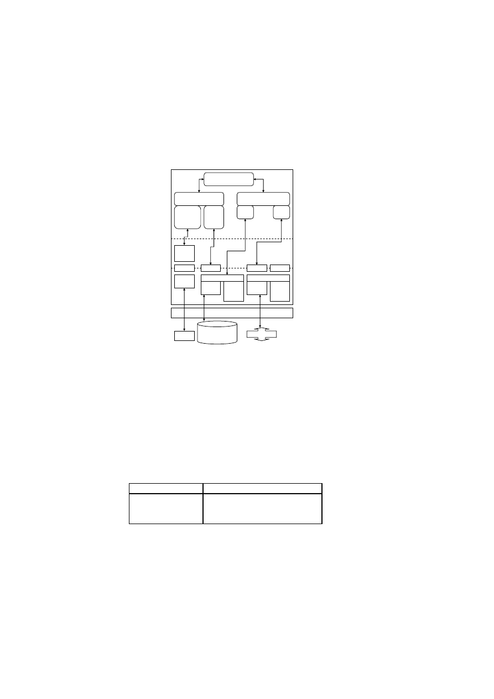
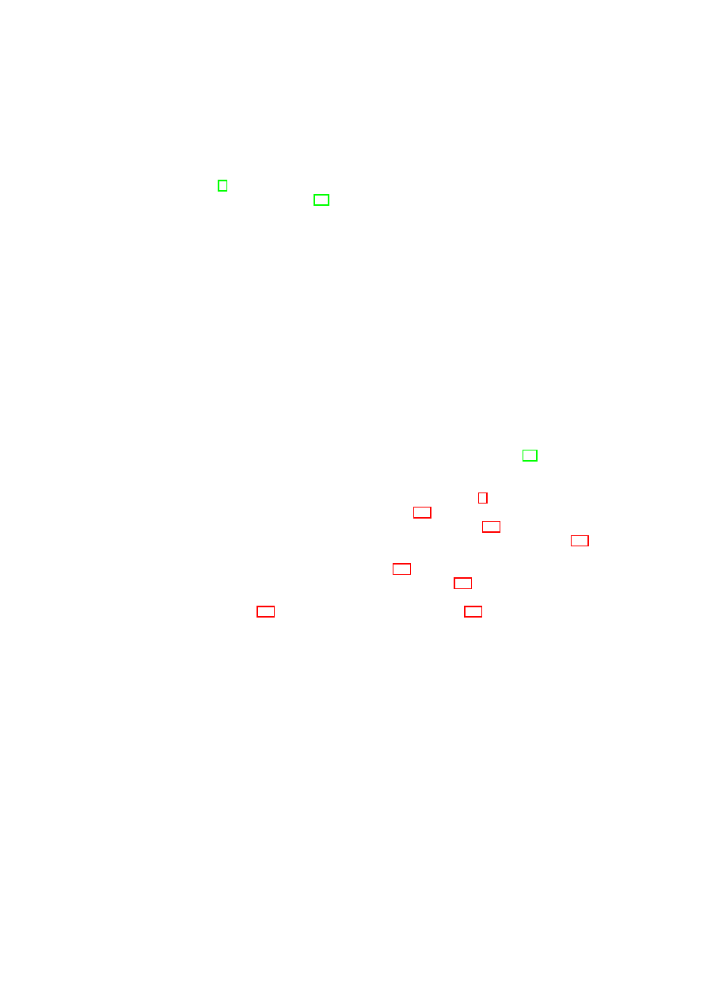
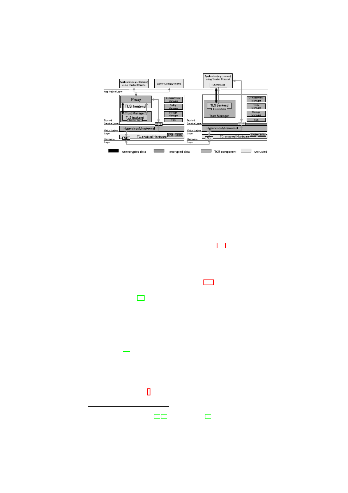

D05.4 Design of the Cross-Domain Security
Services
(M31) May 2008
Project number
IST-027635
Project acronym
Open_TC
Project title
Open Trusted Computing
Deliverable Type
Report
Reference number
IST-027635 /D01.2/V02 Final
Title
D05.4 Design of the Cross-Domain Security
Services
WPs contributing
WP05
Due date
May 2008 (M31)
Actual submission date
May 26, 2008
Responsible Organisation
IBM (Matthias Schunter)
Authors
CUCL, HP, IBM, RUB, Polito
Abstract
This report describes the final design of the
OpenTC security services. The design will be
implemented for the 2008 Demonstrator of a
“Virtual Data Center”.
Keywords
OpenTC, Virtualization, Trusted Computing,
Security Services
Dissemination level
Public
Revision
V02 Final
Instrument
IP
Start date of the
project
1
st
November 2005
Thematic Priority
IST
Duration
42 months
D05.4 Design of the Cross-Domain Security Services
If you need further information, please visit our website
www.opentc.net
or contact
the coordinator:
Technikon Forschungs-und Planungsgesellschaft mbH
Burgplatz 3a, 9500 Villach, AUSTRIA
Tel.+43 4242 23355 –0
Fax. +43 4242 23355 –77
Email
coordination@opentc.net
The information in this document is provided “as is”, and no guarantee
or warranty is given that the information is fit for any particular purpose.
The user thereof uses the information at its sole risk and liability.

Design of the Cross-Domain Security Services
OpenTC Workpackage 5
1
OpenTC Deliverable D05.4
V02 – Final Revision. 6505 (OpenTC Public (PU))
2008/05/26

A
BSTRACT
This report describes the final design of the OpenTC security services. This design will
be implemented for the 2008 Demonstrator of a “Virtual Data Center”. It is based on
the research documented in Deliverable D05.1 "Basic Security Services” and D05.2
“Security Services Proof of Concept”.
The goal of this deliverable is to describe and explain the detailed concepts and
design of our security services. These security services manage the security policies
for our virtual machine platform and enforce them in collaboration with the underlying
Xen or L4 hypervisors.
A
CKNOWLEDGEMENTS
The following people were the main contributors to this report (alphabetically by or-
ganisation): Theodore Hong, Eric John, Derek Murray (CUCL); Serdar Cabuk, David
Plaquin (HP); Bernhard Jansen, HariGovind V. Ramasamy, Matthias Schunter (IBM);
Yacine Gasmi (RUB), Ahmad-Reza Sadeghi (RUB), Patrick Stewin (RUB), Martin
Unger (RUB); Gianluca Ramunno (Polito), Davide Vernizzi (Polito). We would like to
thank our reviewer Peter Lipp from IAIK Graz.
Furthermore, we would like to thank the other members of the OpenTC project for
helpful discussions and valuable contributions to the research that is documented in
this report.
2
Contents
1
Introduction and Outline
5
1.1
Introduction . . . . . . . . . . . . . . . . . . . . . . . . . . . . . . .
5
1.2
Outline of this Report . . . . . . . . . . . . . . . . . . . . . . . . . .
6
2
Related Work
8
2.1
Trusted Computing . . . . . . . . . . . . . . . . . . . . . . . . . . .
8
2.2
Machine Virtualization . . . . . . . . . . . . . . . . . . . . . . . . .
9
2.3
Trusted Virtual Domains . . . . . . . . . . . . . . . . . . . . . . . .
10
2.4
Property-Based Attestation . . . . . . . . . . . . . . . . . . . . . . .
11
2.5
Trusted Channels . . . . . . . . . . . . . . . . . . . . . . . . . . . .
11
3
Compliance Proofs for Xen
12
3.1
Introduction . . . . . . . . . . . . . . . . . . . . . . . . . . . . . . .
12
3.2
Formal Integrity Model for Virtual Machines
. . . . . . . . . . . . .
13
3.3
The PEV Integrity Architecture . . . . . . . . . . . . . . . . . . . . .
16
3.4
Realization using Xen and Linux . . . . . . . . . . . . . . . . . . . .
19
3.5
Use Cases . . . . . . . . . . . . . . . . . . . . . . . . . . . . . . . .
21
3.6
Conclusion . . . . . . . . . . . . . . . . . . . . . . . . . . . . . . .
27
4
Hierarchical Integrity Management
28
4.1
Introduction . . . . . . . . . . . . . . . . . . . . . . . . . . . . . . .
28
4.2
Design Overview . . . . . . . . . . . . . . . . . . . . . . . . . . . .
29
4.3
Basic Integrity Management . . . . . . . . . . . . . . . . . . . . . .
31
4.4
Hierarchical Integrity Management . . . . . . . . . . . . . . . . . . .
35
4.5
Policy Verification for Security Services . . . . . . . . . . . . . . . .
40
4.6
Implementation in Xen . . . . . . . . . . . . . . . . . . . . . . . . .
42
4.7
Related Work . . . . . . . . . . . . . . . . . . . . . . . . . . . . . .
45
4.8
Conclusions . . . . . . . . . . . . . . . . . . . . . . . . . . . . . . .
47
5
Trusted Channels with Remote Integrity Verification
48
5.1
Motivation . . . . . . . . . . . . . . . . . . . . . . . . . . . . . . . .
48
5.2
Requirement Analysis . . . . . . . . . . . . . . . . . . . . . . . . . .
50
5.3
Basic Concept . . . . . . . . . . . . . . . . . . . . . . . . . . . . . .
51
5.4
System Architecture . . . . . . . . . . . . . . . . . . . . . . . . . . .
51
5.5
Credentials, Extensions and their Usage . . . . . . . . . . . . . . . .
55
5.6
Implementing a Trusted Channel with OpenSSL
. . . . . . . . . . .
60
5.7
Security Considerations . . . . . . . . . . . . . . . . . . . . . . . . .
62
5.8
Functional Considerations . . . . . . . . . . . . . . . . . . . . . . .
63
3
4
OpenTC D05.4 – Design of the Cross-Domain Security Services
5.9
Summary . . . . . . . . . . . . . . . . . . . . . . . . . . . . . . . .
64
6
Conclusion and Outlook
65
A Some details on Trusted Channel Implementation
66
A.1 Details of Hardware and Virtualization Layer . . . . . . . . . . . . .
66
A.2 Linkage of Configuration Information to Secure Channel . . . . . . .
69
A.3 State-Change Protocol Flow . . . . . . . . . . . . . . . . . . . . . .
70
Bibliography
71
OpenTC Document D05.4/V02 – Final R6505/2008/05/26/OpenTC Public (PU)
Chapter 1
Introduction and Outline
1.1
Introduction
Hardware virtualization is enjoying a resurgence of interest fueled in part by its cost-
saving potential. By allowing multiple virtual machines to be hosted on a single phys-
ical server, virtualization helps improve server utilization, reduce management and
power costs, and control the problem of server sprawl.
A prominent example in this context is data centers. The infrastructure provider,
who owns, runs, and manages the data center, can transfer the cost savings to its cus-
tomers or outsourcing companies, whose virtual infrastructures are hosted on the data
center’s physical resources. A large number of the companies that outsource their op-
erations are small and medium businesses or SMBs, which cannot afford the costs of a
dedicated data center in which all the data center’s resources are used to host a single
company’s IT infrastructure. Hence, the IT infrastructure belonging to multiple SMBs
may be hosted inside the same data center facility. Today, even in such “shared” data
centers, each run on distinct physical resources and there is no resource sharing among
various customers. In this so-called physical cages model, the customers are physically
isolated from each other in the same data center.
Limited trust in the security of virtual datacenters is one major reason for customers
not sharing physical resources. Since management is usually performed manually, ad-
ministrative errors are commonplace. While this may lead to down-times in virtual
datacenters used by a single customer, it can lead to information leakages to competi-
tors if the datacenter is shared. Furthermore, multiple organizations will only allow
sharing of physical resources if they can trust that security incidents cannot spread
across the isolation boundary separating two customers.
Security Objectives
Our main security objective is to provide isolation among dif-
ferent domains that is comparable
1
with the isolation obtained by providing one infras-
tructure for each customer. In particular, we require a security architecture that protects
those system components that provide the required isolation or allow to verifiably rea-
son about their trustworthiness of and also of any peer endpoint (local or remote) with
a domain, i.e., whether they conforms to the underlying security policy.
We achieve this by grouping VMs dispersed across multiple physical resources
into a virtual zone in which customer-specified security requirements are automatically
1
Note that unlike physical isolation, we do not solve the problem of covert channels.
5
6
OpenTC D05.4 – Design of the Cross-Domain Security Services
enforced. Even if VMs are migrated (say, for load-balancing purposes) the logical
topology reflected by the virtual domain should remain unchanged. We deploy Trusted
Computing (TC) functionality to determine the trustworthiness (assure the integrity) of
the policy enforcement components.
Such a model would provide better flexibility, adaptability, cost savings than to-
day’s physical cages model while still providing the main security guarantees required
for applications such as datacenters.
Hardware Platform
Hypervisor
Security Services
VM
A1
VM
A2
VM
A3
VM
A4
TVD1
Master
TVD1
Master
TVD1
Master
Proxy1
…
Proxy2
Hardware Platform
Hypervisor
Security Services
VM
B1
VM
B2
VM
B3
VM
B4
Proxy1
…
Proxy2
Figure 1.1: TVD Architecture: High-Level Overview.
Contribution
In this deliverable, we provide a blueprint for realizing a logical cages
model, in particular for virtualized data centers, based on a concept called Trusted
Virtual Domains or TVDs [11]. Based on previous work, we describe a security man-
agement framework that helps to realize the abstraction of TVDs by guaranteeing reli-
able isolation and flow control between domain boundaries. Our framework employs
networking and storage virtualization technologies as well as Trusted Computing for
policy verification. Our main contributions are (1) combining these technologies to
realize TVDs and (2) orchestrating them through a management framework that auto-
matically enforces isolation among different zones. In particular, our solution aims at
automating the verification, instantiation and deployment of the appropriate security
mechanisms and virtualization technologies based on an input security model, which
specifies the required level of isolation and permitted information flows.
1.2
Outline of this Report
We first survey background and related work in Chapter 2. The first technical part of
this report describes the integrity and assurance management of the OpenTC Security
Services. This has two aspects: In Section 3 we describe how integrity statements
about virtual machines can be made and how data can be bound to the integrity of a
machine. We also describe how to protect the privacy of users using our system.
OpenTC Document D05.4/V02 – Final R6505/2008/05/26/OpenTC Public (PU)
CHAPTER 1. INTRODUCTION AND OUTLINE
7
In Section 4 we extend these results to cover hierarchical integrity management,
i.e., the integrity protection of packages of multiple virtual machines and the related
components.
The second technical part of this report covers secure channels. Chapter 5 describes
how to establish a secure channel while verifying the integrity of the peer. This allows
users to not only guarantee the integrity of a given machine but also to securely connect
to the machine that has been validated.
In Chapter 6 we conclude this report and point out selected open problems.
OpenTC Document D05.4/V02 – Final R6505/2008/05/26/OpenTC Public (PU)
Chapter 2
Related Work
Virtualization and Trusted Computing have gained prominence in the past ten years
as commercial interests have led to consolidating multiple virtual machines on a sin-
gle physical host. Virtualization enables simple consolidation and isolation while
Trusted Computing promises increased security guarantees. In this section, we in-
troduce Trusted Computing technology in Section 2.1 and virtualization in Section 2.2.
Furthermore, secure networking and other concepts applied in this report are described.
2.1
Trusted Computing
Trusted Computing technology aims to provide a cryptographic guarantee of the in-
tegrity of a computing platform. Arbaugh et al. developed AEGIS [7], the architecture
on which most subsequent Trusted Computing systems are based. AEGIS is respon-
sible for introducing two fundamental concepts: the use of cryptographic hashes (in-
tegrity measurements) of platform code to demonstrate integrity, and the chain of trust.
A piece of code has integrity if it has not been changed in an unauthorized manner
during a defined period of time. Any change, however small, to the code would result in
a complete change in the hash value: the hash is therefore a concise means of represent-
ing the code. The integrity of an entire platform can be captured by starting the boot
process with a core root of trust for measurement (CRTM), which might be a BIOS
boot block, for example. The CRTM loads the next component in the boot process,
measures (hashes) it, and stores that measurement in a secure location. That compo-
nent then carries out whatever processing is necessary before loading and measuring
the next component, and chaining the measurement to the secure log. This process re-
peats until all trusted components are loaded. The integrity of the whole platform can
then be proved by induction over the log of integrity measurements.
AEGIS inspired the most common Trusted Computing architecture, which is de-
fined by the Trusted Computing Group [74]. In this architecture, every computer
contains a secure co-processor, known as a Trusted Platform Module (TPM), which
enables the enforcement of security policies by controlling access to cryptographic
material and primitives. It also provides secure storage in the form of Platform Config-
uration Registers (PCRs), which may only be reset or extended. Extension is used to
represent an entire chain of trust in a single register, and we discuss this further in Sec-
tion 4.3. A secure boot-loader, such as OSLO [38], is required to ensure that the initial
state of the TPM reflects the first component that is loaded. Thereafter, all subsequent
8
CHAPTER 2. RELATED WORK
9
platform components, including the operating system kernel and device drivers, can be
securely loaded by the preceding component.
The TPM features we leverage are integrity measurement, sealing, and attestation.
Measurement of a component involves computing the SHA-1 hash of the binary code
of that component. The sequence of measured values are stored in a measurement log,
external to the TPM. Sealing is a TPM operation that is used to ensure that a certain
data item is accessible only under platform configurations reflected by PCR values.
The unsealing operation will reveal the data item only if the PCR values at the time of
the operation match the PCR value specified at the time of sealing. Attestation refers
to the challenge-response style cryptographic protocol for a remote verifier to query
the platform measurement values recorded and for the platform to reliably report the
requested values. The verifier first sends a challenge to the platform. The platform
invokes the
TPM
_
Quote
command with the challenge as a parameter. The invocation
also carries an indication of which PCRs are of interest. The TPM returns a signed
quote containing the challenge and the values of the specified PCRs. The TPM signs
using the Attestation Identity Key (AIK), whose public key is certified by a third party
that the verifier trusts. The platform then replies to the verifier with the signed quote
along with log information that is necessary to reconstruct the platform’s configuration.
Based on the reply, the verifier can decide whether the platform is in an acceptable state.
A further consideration is the Trusted Computing Base (TCB). This term is used
inconsistently in the literature, and we prefer the definition from Hohmuth et al, who
refer to “the set of components on which a subsystem S depends as the TCB of S.” [34]
Therefore a single platform could contain multiple TCBs, depending on the set of ap-
plications that runs on it. In this work, we refer to the platform TCB as the set of
components on which all other platform components depend, and the application TCB
as the set of components on which a particular application depends. This distinction
can be illustrated by considering the following scenario. A web browser depends on
HTML rendering for correct execution: therefore the rendering is in the application
TCB of the browser. However (assuming a sensible implementation), the rendering
could not compromise the entire platform: therefore it is not in the platform TCB.
2.2
Machine Virtualization
Virtualization makes it possible to partition the resources of a computer platform –
such as memory, CPU, storage, and network connections – among several virtual ma-
chines (VMs), which provide an interface that resembles physical hardware. A virtual
machine monitor (VMM) runs beneath the VMs and is responsible for securely (and
fairly) multiplexing access to the physical resources. In addition, to preserve isolation
between the VMs, the VMM executes privileged instructions on behalf of the guest
VMs. In our work, we consider an architecture whereby the VMM is the only code
that runs at the highest privilege level; alternative approaches place the VMM inside a
host operating system kernel [58, 70]. In particular, we consider the Xen VMM [20].
VMMs are increasingly used in the development of secure computing systems [15,
67, 17]. The typical argument for using a VMM is that the amount of code is relatively
small by comparison to a full operating system: the Xen VMM comprises approxi-
mately
100
,
000
lines of code, while a recent version of the Linux kernel comprises
approximately over
6
million lines of code. The compactness of a VMM therefore
makes it more trustworthy than a monolithic kernel. It can therefore be argued that it is
feasible to include a VMM inside a minimal TCB. Note that security flaws within a VM
OpenTC Document D05.4/V02 – Final R6505/2008/05/26/OpenTC Public (PU)
10
OpenTC D05.4 – Design of the Cross-Domain Security Services
are not solved by a standard VMM (although specialized VMMs, such as SecVisor, do
address this problem [67]). However, the isolation properties of a VMM ensure that
the compromise of one VM cannot affect another VM. Therefore, virtualization can be
used to host applications from mutually distrusting organizations on the same physical
machine, or to provide a sand-box for executing untrusted code.
Trusted virtualization extends the concepts from Trusted Computing, such as chains
of trust, into virtual machines. These can be used to attest the state of a VM to a third
party [27], or to provide the illusion of a physical TPM to applications running within
a VM [9].
To provide context for our Xen-based prototype, we familiarize the reader with the
Xen VM architecture, which is shown in Figure 3.1. In Xen-speak, running instances
of VMs are called domains. A special domain, called Dom0, is the first domain that
is created. Normally, this domain controls all other domains, called user domains or
DomUs. For a given physical device, the native device driver is part of at most one
VM. If the device is to be shared with other VMs, then the VM with the native device
driver makes the device available through device channels implemented using shared
memory. For that purpose, the VM with the native device driver provides a back-end
driver, and any VM that wants to share the device exports a virtual device driver called
the front-end driver to the back-end driver. Every front-end virtual device has to be
connected to a corresponding back-end virtual device; only then does the front-end de-
vice become active. The mapping is many-to-one, i.e., many front-end virtual devices,
one from each user domain, may be mapped to a single back-end virtual device.
2.3
Trusted Virtual Domains
A TVD is represented by a set of distributed virtual processing elements (VPE) (e.g.,
virtual machines) and a communication medium interconnecting the VPEs, and pro-
vides a policy and containment boundary around those VPEs. VPEs within each TVD
can usually communicate freely and securely with each other. At the same time, they
are sufficiently isolated from outside VPEs, including those belonging to other TVDs.
Here, isolation loosely refers to the requirement that a dishonest VPE in one TVD can-
not send messages to a dishonest VPE in another TVD, unless the inter-TVD policies
explicitly allow such an information flow.
Each TVD has an associated infrastructure whose purpose is to provide a unified
level of security to member VPEs, while restricting the interaction with VPEs outside
the TVD to pre-specified, well-defined means only. Unified security within a domain
is obtained by defining and enforcing membership requirements that the VPEs have
to satisfy before being admitted to the TVD and for retaining the membership. Each
TVD defines rules regarding in-bound and out-bound network traffic. Their purpose is
to restrict communication with the outside world.
The concept of TVD, in the form as considered in this paper, was introduced in [11].
Later, a secure network virtualization framework was proposed in [] aiming to realize
the abstraction of TVDs in [11]. The focus [] is a security-enhanced network virtual-
ization, which (1) allows groups of related VMs running on separate physical machines
to be connected together as though they were on their own separate network fabric, and
(2) enforces cross-group security requirements such confidentiality, integrity, and flow
control. However, the work in [] focuses solely on the secure network virtualization
aspects rather than integrating and exploiting of trusted computing functionality.
OpenTC Document D05.4/V02 – Final R6505/2008/05/26/OpenTC Public (PU)
CHAPTER 2. RELATED WORK
11
2.4
Property-Based Attestation
Integrity verification of applications and their underlying Trusted Computing Base
(TCB) helps enforcing security policies in a distributed system. The TCG solution for
remote integrity verification are mechanisms called remote binary attestation, remote
binary binding, and binary sealing. Loosely speaking, binary attestation and binary
binding are based on a measurement of the chain of executed code using a crypto-
graphic digest. This fixes and reveals the exact binaries of a platform, which is privacy
invasive and limits scalability. A more general and flexible extension to the binary at-
testation is property-based attestation [60, 56, 41]: attestation should only determine
whether a platform configuration or an application has a desired property. Property-
based attestation/binding should determine whether the target machine to be attested
fulfills certain requirements (e.g., provides certain access control methods). This avoids
revealing the concrete configuration of software and hardware components. For exam-
ple, it would not matter whether Web browser
A
or
B
is used, as long as both have the
same properties.
Some proposals in the literature consider the protection and prove the integrity of
computing platforms in the context of secure and authenticated (or trusted) boot (see,
e.g., [7], [21], [65], [68], [83]). A high-level protocol for property-based attestation
is presented in [56]. The solution is based on property certificates that are used by
a verification proxy to translate binary attestations into property attestations. In [60]
the authors propose and discusses several protocols and mechanisms that differ in their
trust models, efficiency, and the functionality Aoffered by the trusted components. In
particular, [60] discusses how the TSS, the TPM library proposed by the TCG, can
provide a property-based attestation protocol based on the existing TC hardware with-
out a need to change the underlying trust model. Another refinement of this idea is
proposed in [41]. Moreover, based on ideas of [60], [14] proposes a cryptographic
zero-knowledge protocol for anonymous property-based attestation.
In [32] the authors propose semantic remote attestation using language-based
trusted virtual machines (VM) to remotely attest high-level program properties. The
general idea is to use a trusted virtual machine (TrustedVM) that verifies the security
policy of the machine that runs within the VM.
In [45], [47] and [46] the authors propose a software architecture based on Linux
providing attestation and binding. The architecture binds short-lifetime data (e.g., ap-
plication data) to long-lifetime data (e.g., the Linux kernel) and allows access to that
data only if the system is compatible to a security policy certified by a security admin-
istrator.
2.5
Trusted Channels
The standard approach for creating secure channels over the Internet is to use secu-
rity protocols such as Transport Layer Security (TLS) [19] or Internet Protocol Se-
curity (IPSec) [39], which aim at assuring confidentiality, integrity, and freshness of
the transmitted data as well as authenticity of the involved endpoints. However, se-
cure channels do not provide any guarantees about the integrity of the communication
endpoints, which can be compromised by viruses and Trojans. Based on security archi-
tectures that deploy Trusted Computing functionality, one can extend these protocols
with integrity reporting mechanisms as proposed in [28] for the case of TLS.
OpenTC Document D05.4/V02 – Final R6505/2008/05/26/OpenTC Public (PU)
Chapter 3
Policy Enforcement and
Compliance Proofs for Xen
Virtual Machines
Bernhard Jansen, HariGovind V. Ramasamy, Matthias Schunter (IBM)
3.1
Introduction
Hardware virtualization is enjoying a resurgence of interest fueled in part by its cost-
saving potential in data centers. By allowing multiple virtual machines to be hosted
on a single physical server, virtualization helps improve server utilization, reduce man-
agement and power costs, and control the problem of server sprawl.
We are interested in the security management of virtual machines, i.e., the pro-
tection, enforcement, and verification of the security of virtual machines. Security
management is a non-trivial problem even in traditional non-virtualized environments.
Security management of virtual machines (VMs) is even more complicated because the
virtual machines hosted on a given physical server may belong to different virtual orga-
nizations, and as a result, may have differing security requirements. Protecting a VM
against security attacks may be complicated by inadequate isolation of the VM from
other VMs hosted on the same server. Verifying the security of a VM may be compli-
cated by confidentiality requirements, which may dictate that the information needed
for verification of a VM’s configuration should not divulge configuration information
of other co-hosted VMs.
We address two main problems relating to security management, particularly in-
tegrity management, of VMs: (1) protecting the security policies of a VM against
modification throughout the VM’s life cycle, and (2) verifying that a VM is compliant
with specified security requirements. We describe a formal model that generalizes in-
tegrity management mechanisms based on the Trusted Platform Module (TPM) [78] to
cover VMs (and their associated virtual devices) and a wider range of security policies
(such as isolation policies for secure device virtualization and migration constraints for
VMs). On TPM-equipped platforms, system compliance can be evaluated by checking
TPM register values. Our model allows finer-grained compliance checks by handling
policies that can be expressed as predicates on system log entries. Verifying compliance
involves showing that the system integrity state, as reflected by secure write-only logs,
12
CHAPTER 3. COMPLIANCE PROOFS FOR XEN
13
satisfies certain conditions. We build on previous work by others [27, 31, 63, 65, 9]
who have used the Trusted Platform Module (TPM) [78] to protect the integrity of the
core virtual machine monitor (VMM) and to reliably isolate VMs. Based on the formal
model, we describe an integrity architecture called PEV (which stands for protection,
enforcement, and verification) and associated protocols. The architecture incorporates
integrity protection and verification as part of the virtualization software itself, and at
the same time enhances its policy enforcement capabilities. We describe a prototype
realization of our architecture using the Xen hypervisor [8]. We demonstrate the policy
enforcement and compliance checking capabilities of our prototype through multiple
use cases.
Our generalized integrity management mechanisms are both extensible and flexi-
ble. Extensibility means that it is possible to guarantee compliance even if new virtual
devices are attached to the VMs. Flexibility means that the verifier is able to spec-
ify which aspects of the enforced security policies are of interest, and obtain only the
information corresponding to those aspects for validation of system compliance.
Physical Hardware
Management
of security,
devices,
VMs, and I/O
Dom0
GuestOS
User
Software
DomU 1
GuestOS
User
Software
DomU 2
GuestOS
User
Software
DomU 3
VMM Core
Figure 3.1: Xen virtual machine architecture
3.2
Formal Integrity Model for Virtual Machines
Figure 3.2 shows our system model for integrity management. At a high level, the
system consists of VMs and a TCB, and is configured through policies. The TCB peri-
odically logs the integrity state of the rest of the system. The log repository contains a
record of the integrity history of the system, and is secure write-only, i.e., log entries,
once written, cannot be modified or removed by any entity in the rest of the system.
The log data includes the list of software components, configuration parameters, poli-
cies, and any updates to them. The log contents are useful in evaluating compliance
with those security properties that can be expressed as predicates on the contents. The
compliance proof involves showing that correct policies and healthy policy enforce-
ment mechanisms are in place. The TCB also provides conditional release of secrets,
where the condition is expressed as predicates on the log data. That allows a sensitive
data item and a condition to be stored such that the data item is released only if the log
data satisfies the condition specified.
For flexibility and extensibility, the log data is stored in a tree structure instead
of a monolithic log file. The log tree
T
is shown in Figure 3.3. Each tree node is a
triple containing log data for one system component. To keep the tree size manageable,
only those components that have an impact on the system’s integrity or those that are
of interest from an integrity verification point of view are represented in the log tree.
OpenTC Document D05.4/V02 – Final R6505/2008/05/26/OpenTC Public (PU)
14
OpenTC D05.4 – Design of the Cross-Domain Security Services
TCB
policy
log
integrity
state
conditional
release
of secrets
VM
sealing or
attestation
request
response
User or Verifier
integrity
requirements
predicate
Π
Π
System
log
repository
secret
repository
VM
VM
. . . .
Figure 3.2: System model for integrity management
…
…
(
id, type, log
)
(
id, type, log
)
(
id
1
, type
1
, log
1
)
(
id
1
, type
1
, log
1
)
(
id
11
, type
11
, log
11
)
(
id
11
, type
11
, log
11
)
(
id
111
, type
111
, log
111
)
(
id
111
, type
111
, log
111
)
(
id
2
, type
2
, log
2
)
(
id
2
, type
2
, log
2
)
(
id
21
, type
21
, log
21
)
(
id
21
, type
21
, log
21
) (
id
2
n
, type
2
n
, log
2
n
)
(
id
2
n
, type
2
n
, log
2
n
)
Figure 3.3: Tree
T
of log entries
A triple for a component
k
contains an identifier
id
k
, a component type
type
k
, and a
vector
log
k
of log values. Sub-components are modeled as children of a node. The tree
can be extended by adding or removing children nodes. For example, the addition of a
new virtual device to a VM can be easily reflected in the log tree by adding a new node
as a child of the sub-tree that corresponds to the VM.
The integrity requirements of a user or verifier are modeled by
Π(
p
(
T
))
, where
Π
is a predicate and
p
()
is a projection function. We introduce the notion of a projection
function, denoted by
p
()
, to model the specific aspects of the system’s integrity state
that is of interest to a user or verifier. For example, a verifier may be interested only in
a disk’s access control list and not the actual disk contents. When applied on the log
tree, the function returns a subset of the tree nodes and a subset of the vector elements
from the log vector of each node. Formally,
p
(
T
) =
{
l
k
}
, where
l
k
∈
log
k
, and
(
id
k
, type
k
, log
k
)
∈ T
.
We now use our formal model to generalize TPM-based integrity protection and
verification. We also enhance our model by adding access control to the log contents.
3.2.1
Generalized Sealing to Protect Integrity
A TPM-equipped system can seal a data item, i.e., the system can encrypt the data item
and bind it to the system configuration prevalent at the time of sealing. The system
configuration is reflected by the contents of a specified subset of the TPM’s PCRs. The
data item may be a key generated by the TPM itself or something generated outside the
TPM. Decryption of the data item, called unsealing, is possible only when the system
configuration (reflected by the contents of the same subset of PCRs) is the same as that
at the time of sealing.
We generalize sealing for protecting the integrity of a sensitive data item
d
by mak-
ing
d
inaccessible to the system (or some component) unless specified integrity re-
OpenTC Document D05.4/V02 – Final R6505/2008/05/26/OpenTC Public (PU)
CHAPTER 3. COMPLIANCE PROOFS FOR XEN
15
quirements are met. We use two operations,
seal
and
unseal
, to model the concept of
generalized sealing. Let
T
x
denote the log tree at time
t
x
. The
seal
operation, per-
formed at time
t
s
, takes as input the data item
d
, a projection function
p
()
, a sealing
predicate
Π
, and the public part
K
p
of an encryption key
K
. The operation logs
p
()
and
Π
, and encrypts
d
using
K
p
to produce the encrypted output
e
. Thus, the contents
of
T
s
include
p
()
and
Π
. The
unseal
operation, performed at time
t
u
(where
t
u
> t
s
),
takes as input
e
and
T
u
, and outputs
d
iff the condition
Π(
p
(
T
u
))
holds. In other words,
the private part of the key
K
used for decrypting
e
is revealed iff the condition holds.
Here,
p
()
and
Π
are retrieved from the log. A simple sealing predicate may just com-
pare the result of
p
(
T
u
)
with a reference value (e.g.,
p
(
T
s
)
). A more complex predicate
may extract the high-level properties of the system from
p
(
T
u
)
and compare them with
desired properties (similar to property-based attestation [56, 60]).
One can easily see that our generalized sealing concept covers the special case of
TPM sealing. For TPM sealing,
T
u
consists of the values in the PCRs; the projection
function
p
()
specifies the subset of PCRs whose values are of interest for assessing the
system’s integrity; the sealing predicate
Π
checks whether their values at the time of
unsealing are the same as at the time of sealing.
3.2.2
Generalized Attestation to Verify Integrity
A TPM-equipped system can use the TPM to engage in a challenge-response style
cryptographic protocol, called attestation, with a verifier. The protocol allows the ver-
ifier to query and reliably obtain the measurement values for the system stored in the
PCRs of the TPM. Reliable reporting of the measurement values is due to the signing
of the values by the TPM, which is trusted by the verifier. Based on these values, the
verifier can assesses the integrity state and the trustworthiness of the system.
We generalize attestation so that the verifier can specify which aspects of the sys-
tem’s integrity state are of interest to her. In our model, the attestation operation
attest
()
obtains as input a challenge
c
, an attestation predicate
Π
, a projection function
p
()
, and a secret key
K
s
. The operation outputs a signed message
sign
K
s
(
f
(
p
(
T
))
, c
)
.
Our attestation operation is a generalization of both binary and property-based at-
testation [56, 60, 32]. For binary attestation, the predicate
Π
is simply the identity
function, i.e.,
Π(
x
) =
x
, and the result of attestation is simply the signature on the
result of the projection function applied on the log tree. TPM attestation is a special
case of binary attestation in which
T
simply consists of the values in the PCRs and
the projection function
p
()
specifies a subset of PCRs. For property-based attestation,
the predicate
Π
extracts high-level properties from the result of the projection function
applied on the log tree.
Whereas previous works such as the Integrity Measurement Architecture (IMA)
of of Sailer et al. [65] provide a good way of checking the hash of software binaries,
our generalized attestation enables better assessment of the run-time behavior of the
system. In this respect, our model has goals similar to those of Haldar et al. [32]. How-
ever, unlike Haldar et al. who focus on attesting the behavior of a software application,
our model has a focus on VMs and virtual devices. For example, our attestation oper-
ation enables a verifier to check the number and type of VMs running on the system.
Because of their reliance on the Java virtual machine which runs on top of an operating
system, their TCB includes the operating system. In contrast, our TCB includes only
the VMM and underlying system layers, and is much smaller than theirs.
OpenTC Document D05.4/V02 – Final R6505/2008/05/26/OpenTC Public (PU)
16
OpenTC D05.4 – Design of the Cross-Domain Security Services
Central
Integrity
Manager
Network
Integrity Manager
VMM
Integrity Manager
Devices
Integrity Manager
Storage
Integrity Manager
Attestation
Sealing
Unsealing
TCB
Predicate
Evaluator
Figure 3.4: Architecture for integrity protection and verification
3.2.3
Access Restriction
The integrity of certain aspects of the system (such as the VMM) may be important to
multiple users. Conversely, certain aspects of the system may be confidential to one
or more users, e.g., the state of a particular VM may be verified only by the users of
that VM. Hence, it is important that attestation and sealing be applied not directly on
the system state, but on appropriate projections of the state. Furthermore, if a state
that is relevant for integrity verification contains information about multiple users, it
should be possible to prove integrity without revealing the actual state. We formalize
such requirements using two concepts: access restriction specification and projection
assessment function.
Given a set of users
U
and a log tree
T
, an access restriction is specified by a
function
r
()
that assigns a subset of
U
to each vector element in each node of the
tree. The subset assigned to a given vector element in a given node is called the access
control list (ACL) for that element. Despite the potentially large number of nodes in the
log tree, ACLs can be efficiently implemented by attaching ACLs only to some nodes
and vector elements. ACLs of children nodes may be derived through inheritance of
the parent node’s ACL. Scoping rules may be used to apply an ACL to multiple vector
elements of a given node.
A projection assessment function can determine whether a given projection con-
forms to or violates access restrictions. A projection
p
(
T
)
applied by a user
u
∈
U
conforms to the access restriction specification
r
()
if the output only contains vector
elements in which
u
was contained in the ACL. Any predicate
Π
for attestation or seal-
ing can be applied on such a projection without violating the access restrictions. If the
projection does not conform to
r
()
, then prior to applying the predicate, an access filter
is used to hide those parts of
p
(
T
)
that
u
is not authorized to see.
3.3
The PEV Integrity Architecture
Figure 3.4 shows the PEV architecture for protecting, enforcing, and verifying the
integrity of VMs and virtual devices. There is a central integrity manager and compo-
nent integrity managers that are associated with individual system components such as
storage, VMM, networking, and other devices. Each component integrity manager is
responsible for the part of the log tree corresponding to the component. For example,
the storage integrity manager is responsible for maintaining the storage sub-tree of the
OpenTC Document D05.4/V02 – Final R6505/2008/05/26/OpenTC Public (PU)
CHAPTER 3. COMPLIANCE PROOFS FOR XEN
17
system log tree
T
. Hereafter, we refer to the central integrity manager as the Integrity
Manager.
The Integrity Manager has a master plug-in module for each log projection func-
tion that needs to be implemented. The module obtains state information about various
aspects of the system that may be of interest to a potential verifier or user by invoking
the appropriate component plug-in modules and aggregating their outputs. A compo-
nent plug-in module is part of the component integrity manager and reveals particular
aspects of the component’s integrity that are relevant for the projection function.
In Figure 3.4, the various master plug-in modules are attached to the Integrity Man-
ager are shown using different geometrical shapes (ovals, hexagons, triangles, and
rectangles). For example, the triangular plug-in module measures certain aspects of
system storage and the VMM, as indicated by the presence of triangular component
plug-in modules in the Storage Integrity Manager and VMM Integrity Manager. On
the other hand, the hexagonal plug-in module measures only certain aspects of sys-
tem devices. Each plug-in module has a unique identifier. The mapping between each
plug-in identifier and the functionality provided by the corresponding plug-in module
is made publicly available (e.g., through a naming service or a published table).
3.3.1
Sealing/Unsealing Protocol
At the time of sealing, the user provides the following inputs:
Data The data item to be encrypted during sealing and to be revealed later only if
certain conditions are met.
Key The sealing key whose public part is used for encrypting the data at the time of
sealing, and whose private part is revealed only if the unseal operation completes
successfully.
Identifier(s) of Plug-in Module(s) By listing the identifiers of plug-in modules, a user
can choose what aspects of the system’s integrity state are to be checked prior to
revealing the private part of the sealing key.
Predicate The predicate specifies user-defined conditions that the system’s integrity
state must satisfy at the time of unsealing in order for the private part of the
sealing key to be revealed.
Our sealing protocol requires the log projection functions (described in Sec-
tion 3.2.1) to be implemented as plug-in modules as part of the TCB. The key used
for encrypting the sensitive data item is sealed away against the state of the TCB and
a hash of the user-specified projection functions and sealing predicates. The Integrity
Manager stores the state of the TCB in PCRs that cannot be reset and the hash in a
resettable PCR (say
P CR
i
). This ensures that the TCB is aware of the conditions to
be satisfied before the key can be revealed to the user. To perform the unseal operation,
the TCB has to ensure that
P CR
i
still contains the hash of the user-specified projec-
tion function and sealing predicates. Then, the unseal operation reveals the key to the
Integrity Manager. The Integrity Manager then invokes the predicate evaluator module
(Figure 3.4) to check whether the sealing predicates (evaluated on the output of the log
projection function) are indeed satisfied. If that is the case, then the Integrity Manager
reveals the key to the user.
OpenTC Document D05.4/V02 – Final R6505/2008/05/26/OpenTC Public (PU)
18
OpenTC D05.4 – Design of the Cross-Domain Security Services
N
N
1
N
2
N
11
N
12
N’
N’
1
N’
2
N’
11
N’
12
R
R
1
R
2
R
11
R
12
Figure 3.5: Enforcing access restrictions on system state
The flexibility of our sealing protocol is due to the fact that arbitrarily complex
conditions to reveal the sealed key can be coded as plug-in modules. The extensibility
arises from the fact that new plug-in modules covering the integrity state of newly
added VMs or virtual devices can be easily added to the TCB.
3.3.2
Attestation Protocol
The verifier initiating the attestation protocol provides as input a challenge (to ensure
freshness) and the identifier(s) of plug-in module(s) that are relevant to evaluating sys-
tem compliance with the verifier’s integrity requirements. The flexibility of our attes-
tation protocol relies on the verifier being able to attest the TCB and requires the log
projection functions (described in Section 3.2.1) to be implemented as plug-in modules
as part of the TCB. The extensibility of our attestation protocols relies on the ability to
add new plug-in modules for new aspects of the system’s integrity state that the verifier
may be interested in.
3.3.3
A Blinding Technique For Enforcing Access Restrictions
Figure 3.5 shows a simple blinding technique that uses a commitment scheme to enforce
access restrictions on the log tree. Cryptographic commitment schemes [30] generally
consist of two phases. The first phase, called commit phase, is used to make a party
commit to a particular value while hiding that value from another party. It is only in the
second phase, called reveal phase, that the value is revealed to the second party. Any
commitment scheme guarantees that (a) the committed value cannot be obtained by the
second party before the reveal phase, and (b) the second party can detect whether the
value revealed is indeed the same value that was committed to in the first phase.
For simplicity, we consider blinding at the granularity of log tree nodes instead of
at the granularity of log vector elements in the tree nodes, i.e., the access restriction
specification
r
()
assigns a subset of
U
to each node of the tree. A random tree
R
is
bound to the original log tree
T
through a multi-bit commitment scheme to give the
blinded log tree
¯
T
.
R
is a tree that has the same structure as that of
T
and whose nodes
are random numbers. Existing commitment schemes such as the one by Damgard et
al. [18] or those based on one-way hash functions can be used for this purpose.
OpenTC Document D05.4/V02 – Final R6505/2008/05/26/OpenTC Public (PU)
CHAPTER 3. COMPLIANCE PROOFS FOR XEN
19
In a TPM-equipped system, logging is done by extending the PCRs with the mea-
surement values. For blinding, it is the nodes of
¯
T
that are actually logged. This
means that instead of doing the normal
TPM
_
extend
(
n
)
, a
TPM
_
extend
(
r
⊗
n
)
is
done, where
n
is a node of
T
,
r
is a node of
R
, and
⊗
denotes the commitment
operation used for hiding
n
until the reveal phase.
A projection function
p
()
that conforms to the access restrictions can be realized as
follows: when invoked at the request of user
u
,
p
()
reveals
¯
T
and only those nodes in
T
that contain
u
in their respective ACLs. Thus,
p
()
implements the reveal phase of the
multi-bit commitment scheme and reveals only those nodes in
T
that
u
is authorized
to access. Due to the guarantees of the commitment scheme, the system cannot invent
arbitrary values for the nodes in
T
without being detected by the user.
As a result of the blinding technique described above, any user
u
knows that all
components that have any effect on system integrity have been taken into consideration
in the system log tree; in addition, for those components that it is authorized to access,
u
can check whether they indeed have the acceptable configuration and state value, by
comparing with its own reference values that may be provided and certified by a trusted
third party. In particular, if the ACL for the root node is
U
(i.e., all users can access
the root node), then any user can verify overall system integrity (just from the value of
root(
T
)) without knowing the exact configuration of any individual component in the
system.
Our approach of using commitment schemes for blinding suffers from the disad-
vantage that two colluding verifiers can learn the values revealed to the other. Alternate
schemes based on zero-knowledge proofs or deniable signatures need to be investigated
to overcome this disadvantage.
3.4
Realization using Xen and Linux
Figure 3.6 shows an example implementation of our PEV architecture with the Xen hy-
pervisor using Linux for Dom0. The main components of our implementation are the
Compartment Manager (CM), Integrity Manager (IM), and the Secure Virtual Device
Manager (SVDM). All components are implemented in Dom0. The CM is responsi-
ble for the VM life cycle management. As the sole entry point for user commands, it
communicates directly with the hypervisor and orchestrates the IM and the SVDM. Ta-
ble 3.1 shows the mapping between concepts in our formal model and their realization
in our Xen prototype. XSLT is a language for transforming one XML document into
another XML document [3]. We assume that the XSLT interpreter is part of the TCB.
The
getCurrentState
()
function of the CM returns the current state of the physical
machine, which includes the list of hosted VMs, their status (active, suspended, or
hibernating), VM ownership information (e.g., the virtual organization to which a VM
belongs), the amount of free memory available, etc. Using the result of the function,
a verifier can decide whether the physical machine satisfies the integrity requirements
for performing certain actions (e.g., starting a new VM belonging to a particular virtual
organization).
The IM in our Xen prototype has a storage integrity plug-in (SIP) for measuring var-
ious disk images and files. The IM also has an Attestation & Sealing module (ASM)
that interfaces with the TPM for executing the sealing and attestation protocols (de-
scribed in Sections 3.3.1 and 3.3.2) as well as for invoking normal TPM operations,
such as
TPM
_
Quote
. The ASM invokes normal TPM operations through the TPM
OpenTC Document D05.4/V02 – Final R6505/2008/05/26/OpenTC Public (PU)

20
OpenTC D05.4 – Design of the Cross-Domain Security Services
Xen Hypervisor
TPM
Hard Disk
Drive (HDD)
Network
/dev/tpm
TPM
Driver
TPM
Software
Stack
HDD
Driver
DM Crypt
/dev/sda
Ethernet
Driver
virtual
network
device
backend
Bridge
brctl
eth0
Compartment
Manager
Integrity
Manager
Secure Virtual
Device Manager
virtual
disk
virtual
NIC
Attestation
& Sealing
Module
Storage
Integrity
Plug-in
Dom0
User
Space
Library
Space
Kernel
Space
virtual
block
device
backend
Figure 3.6: Realization using Xen and Linux
Model
Xen-based Prototype
Projection
p
()
component measurement plug-in
Predicate
Π
XSLT stylesheet
Access Filter
XSLT stylesheet
Table 3.1: From model to implementation
OpenTC Document D05.4/V02 – Final R6505/2008/05/26/OpenTC Public (PU)
CHAPTER 3. COMPLIANCE PROOFS FOR XEN
21
Software Stack (TSS) [71], which is the standard API for accessing the functions of
the TPM.
The SVDM is responsible for managing virtual devices such as virtual hard disks,
virtual block devices, virtual network devices, and virtual TPMs. The service offered
by the SVDM is realized through multiple specialized low-level component plug-in
modules, one for each virtual device. Figure 3.6 shows two plug-ins in our Xen pro-
totype. One is for managing the virtual (encrypted) hard disk and the other one is for
managing the virtual network interface card (NIC).
In Dom0, secure device virtualization is implemented in the kernel space. Tasks
such as configuring virtual devices are done through the SVDM in the user (or applica-
tion) space. The SVDM manages the security properties of devices. For example, a se-
cure hard disk is implemented by means of the DM Crypt loopback device. Similarly,
network virtualization is done by providing virtual NICs for the VMs and bridging
these virtual NICs to the physical NIC. Security for networks has two aspects. Topol-
ogy constraints define which VM is allowed to connect to which sub-network(s). In
addition, confidentiality requirements dictate which connections need to be encrypted.
Secure management of virtual devices is a complex task. For example, there are
multiple steps involved in starting a virtual hard-disk drive. First, a policy-based check
of the state of the physical machine is done based on the results of
getCurrentState
()
function. Depending on the logic implemented by the corresponding plug-in, that
check may include verifying the measurements of the hypervisor, binary disk, and the
Dom0 image. Then, the virtual hard-disk is attached with credentials and connected
to a loop device (/dev/loop). The virtual hard-disk may be encrypted, for example,
with a sealing key that is made available only if the platform is in a certain state. The
decryption of the virtual hard-disk image is done using Linux hard-disk encryption.
After decryption, the device file that gives access to the decrypted image is connected
to the front-end. Similar policy-based checks may be done when starting other virtual
devices. For example, before starting a virtual network device, policies may stipulate
that the VM must be in some acceptable state and outside firewalls must be configured
correctly.
3.5
Use Cases
In this section, we describe a few examples of how the components introduced in Sec-
tion 3.4 interact for integrity protection, enforcement, and verification purposes. We
assume that the core TCB (including Xen and Dom0 Linux) has been measured at
start-up time. Additional services may need to be measured based on policy. The mea-
surement can either be done by a trusted boot loader such as TrustedGRUB [2] (which
measures the entire boot image) or by a more fine-grained approach such as Sailer et
al.’s IMA [65].
3.5.1
TPM-based Attestation on a VM Disk
Figure 3.7 shows the component interactions for attesting the current state of the TCB
and the status of a VM’s disk image. The user/verifier interacts with the CM through
the
attestationRequest
call with an attestation descriptor and user credential as pa-
rameters (step 1). The attestation descriptor is an XML structure that describes what
OpenTC Document D05.4/V02 – Final R6505/2008/05/26/OpenTC Public (PU)
22
OpenTC D05.4 – Design of the Cross-Domain Security Services
Figure 3.7: TPM-based attestation on a VM disk
aspect of the system’s integrity state the verifier wants attested. In other words, the
attestation descriptor is how the verifier chooses the log projection function suitable
for its purpose. As described before, projection functions are realized by a set of com-
ponent plug-in modules. Some of these plug-in modules are measurement plug-ins,
which not only return the relevant integrity states of the components but are also the
ones measuring their integrity states in the first place. The attestation descriptor con-
tains one or more measurement descriptors. Based on the measurement descriptors,
the IM knows the exact set of measurement plug-ins to invoke.
Figure 3.8 shows an example attestation descriptor as a XML structure. It contains
an
<attestation>
section, which defines the type of attestation (
tpm-based
)
and the parameters needed for attestation (the TPM Attestation Identity Key or
AIK
and a
challenge
). Nested in the attestation descriptor is a measurement descriptor,
which specifies a measurement target (
measureTarget
) and a destination (
dest
).
The target indicates what is to be measured (in this case, a VM disk image), whereas
the destination indicates where the result should be stored (in this case, the TPM’s PCR
number 16). The
<attestTarget>
defines the scope of the requested attestation (in
this case, all PCRs).
Based on the user credential supplied, the CM checks whether the verifier has the
right to request attestation of the system sub-states indicated by the attestation descrip-
tor. The check is essentially a way of determining whether the requested projection is
a projection that conforms to the access restriction specification; hence, it is useful in
enforcing access restriction. If the check reveals that the verifier wants to have more
OpenTC Document D05.4/V02 – Final R6505/2008/05/26/OpenTC Public (PU)
CHAPTER 3. COMPLIANCE PROOFS FOR XEN
23
<attestation-desc>
<attestation type="tpm-based"
challenge="0xaded..."
aik="0xaada3..">
<measurement-desc type="tpm">
<measureTarget name="disk:/dev/sdb1"
dest="PCR16"/>
</measurement-desc>
<attestTarget name="ALLPCRS"/>
</attestation>
</attestation-desc>
Figure 3.8: Attestation descriptor in XML
attested than what he/she is allowed to, then the entire attestation request is denied.
Otherwise, the CM forwards the request to the IM (step 1.1).
The IM extracts the measurement descriptor(s) from the attestation descriptor and
delegates the measurement(s) to the appropriate plug-in(s). In our example, the IM
invokes the
measurevHD
function at the SIP passing the measurement descriptor as a
parameter (step 1.1.1). The plug-in completes the requested measurement and returns
the measurement result back to the IM (step 1.1.2). Although step 1.1.2 might look like
an unnecessary extra step, the indirection via the IM allows the measurement plug-ins
to be written independent of the TPM or similar future devices that are indicated as
dest
.
The IM invokes the
wrToTPM
function at the ASM with the challenge, the
AIK
,
the measurement result, and the destination PCR (step 1.1.3). The actual writing of the
result into the PCR happens by the
TPM
_
extend
operation (step 1.1.3.1). Thereafter,
a
TPM
_
Quote
gets created and returned to the ASM (steps 1.1.3.2 and 1.1.3.3). The
ASM wraps the
TPM
_
Quote
into an
attestationResponse
and returns it to the IM. The
attestationResponse
includes not only the
TPM
_
Quote
but also the relevant log files.
The IM returns the
attestationResponse
to the CM (step 1.2), which forwards it to the
verifier (step 2).
A verifier can check the attestation result by recomputing a hash over the attestation
targets (i.e., the relevant log files) specified in the
attestationResponse
and comparing
the resulting hash with the hash in the PCR from the
TPM
_
Quote
.
The PCR in which the measurement result is stored will be reset after the attestation
process has finished. Therefore, our prototype requires a TCG 1.2 compliant TPM, and
the
dest
PCR has to be
16
or higher.
3.5.2
(Re-)Starting a VM with TPM-based Sealing
Figure 3.9 shows the component interactions for (re-)starting a VM with a sealed disk
image. In this use case, we show how to enforce a policy that specifies that the key for
decrypting the disk image be revealed only after measuring the disk image and only if
the measurement value written into a specified PCR matches the value against which
the key was sealed.
The user interacts with the CM through the
startVM
call to (re-)start the VM
(step 1). After determining that the disk image has to be first decrypted through unseal-
OpenTC Document D05.4/V02 – Final R6505/2008/05/26/OpenTC Public (PU)
24
OpenTC D05.4 – Design of the Cross-Domain Security Services
Figure 3.9: Creation of a VM with TPM-based sealing
ing, the CM obtains the sealing descriptor that was given to it at the time of sealing.
Like the attestation descriptor, the sealing descriptor also contains one or more mea-
surement descriptors, which are used to let the IM know the exact set of measurement
plug-in modules to invoke.
Figure 3.10 shows an example sealing descriptor as an XML structure. It contains
an
<sealing>
section, which defines the type of sealing (
tpm-based
) and the pa-
rameters needed for unsealing (the identifier of the key protected by the TPM). Nested
in the sealing descriptor there is a measurement descriptor, which specifies a measure-
ment target (
measureTarget
) and a destination (
dest
). The target indicates what
is to be measured (in this case, a VM disk image), whereas the destination indicates
where the result should be stored (in this case, the TPM’s PCR number 16).
The CM calls the IM interface
unsealKey
(step 1.1), passing the sealing descriptor
as a parameter. The IM extracts the measurement descriptor from the sealing descrip-
tor and calls the
measurevHD
interface of the SIP with the measurement descriptor
(step 1.1.1). The plug-in reads the list of
measureTargets
, and accordingly mea-
sures the disk image. It returns a measurement result list to the IM (step 1.1.2). The
IM calls the ASM, which handles TPM-related functions (step 1.1.3). The ASM writes
the measurements to the TPM by invoking the
TPM
_
Extend
operation (step 1.1.3.1).
Furthermore, the ASM performs the unsealing of the key requested by invoking the
TPM
_
Unseal
operation (step 1.1.3.3). If the
dest
PCR value matches the value at the
time of sealing, then the disk is in the desired state and the unseal operation is success-
ful (step 1.1.3.4); in that case, the ASM returns a key back to the IM (step 1.1.4), which
in turn returns the key to the CM (step 1.2). In case the unseal operation fails, the ASM
would return a failure. The CM calls the SVDM function
configAndUnlock
()
to attach
OpenTC Document D05.4/V02 – Final R6505/2008/05/26/OpenTC Public (PU)
CHAPTER 3. COMPLIANCE PROOFS FOR XEN
25
<sealing-desc>
<sealing type="tpm-based" keyid="0x01">
<measurement-desc type="tpm">
<measureTarget
‘‘
name="file:/xenimages/vm1image"
desc="PCR16"/>
</measurement-desc>
</sealing>
</sealing-desc>
Figure 3.10: Sealing descriptor in XML
and unlock the disk (steps 1.3 and 1.4). Upon successful completion of that function,
the CM instructs the Xen hypervisor to actually start the VM (steps 1.5 and 1.6).
For the sake of simplicity, Figure 3.9 does not show details of key handling such as
loading a sealing wrapper key into the TPM.
3.5.3
Enforcement and Compliance Proofs for Information Flow
Control
Customer
Network
Management
Network
DMZ
Internet
Figure 3.11: Virtual network topology
Consider, for example, the virtual network topology shown in Figure 3.11 with
four virtual network zones. The topology shows the network of a company (which we
shall call the customer company) connected to the Internet via a demilitarized zone
(DMZ). The customer network is also connected to a management network that allows
an outsourcing provider to manage the customer systems. The management network is
not connected to the Internet.
from/to
Cust
.
DMZ
Mgmt
.
Internet
Cust
.
1
1
1
0
DMZ
1
1
0
1
Mgmt
.
1
0
1
0
Internet
0
1
0
0
Figure 3.12: Flow control matrix
OpenTC Document D05.4/V02 – Final R6505/2008/05/26/OpenTC Public (PU)
26
OpenTC D05.4 – Design of the Cross-Domain Security Services
An information flow-control matrix is a simple way of formalizing the system-wide
flow-control objectives [12]. Figure 3.12 shows a sample matrix for the four virtual
network zones. Each matrix element represents a policy specifying the information
flows permitted between a pair of network zones. The 1 elements along the matrix
diagonal convey the fact that there is free information flow within each network zone.
The 0 elements in the matrix are used to specify that there should be no information
flow between two zones, e.g., between the management zone and the Internet.
In [12], we described a Xen-based prototype of a secure network virtualization
architecture that is based on the concept of Trusted Virtual Domains. The architecture
allows arbitrary network topologies connecting VMs. For example, different VMs on
the same physical infrastructure may belong to different virtual network zones. Despite
this, the architecture ensures the enforcement of policy-based information flow control.
We can use the architecture for enforcing the policies shown in Figure 3.12.
<flow-policy>
<zone id="customer-net">
<permit id="mgmt-net" />
<permit id="dmz" />
</zone> ...
</flow-policy>
Figure 3.13: Flow control policy in XML
By combining the Xen prototypes of our PEV architecture and our secure network
virtualization architecture, it is possible to validate the configuration of the virtual net-
working subsystem on each host. The subsystem exports an XML version of its flow-
control matrix, as shown in Figure 3.13. The network measurement plug-in outputs
the XML structure of the flow-control policy, when invoked by the IM. By request-
ing attestation of the TCB and this policy, a verifier can obtain a compliance proof for
the correct configuration of the virtual networking subsystem on a given host. At the
verifier, a XSLT stylesheet is used to perform further transformations on the XML file
returned by the platform. The XSLT stylesheet is a concrete implementation of the at-
testation predicate
Π
(described in Section 3.2.2), which assesses whether the platform
is trustworthy from the verifier’s point of view. The result of the predicate will serve to
convince the verifier that the policy in Figure 3.12 is the actual flow-control policy as
enforced by the network subsystem. If access restriction is an important concern, the
XML output from the plug-in modules may be first processed by an XSLT stylesheet
that implements a access filter before passing it on to the verifier. In such a case, the
stylesheet would be embedded in the platform TCB.
A user can also protect sensitive information (say, an encryption key) against access
by an untrusted network configuration using a two-stage procedure. The first stage is
sealing, in which the user has to specify the binary configuration of the TCB and condi-
tions for checking whether a given network configuration is a trusted one. Figure 3.14
shows an XSLT script that encodes the condition that the customer network should be
directly connected only to the DMZ and the management network of the outsourcing
provider, but not to any other network. The input to the XSLT script is the XML pol-
icy that is output by the network measurement plug-in. The XSLT script is a concrete
realization of the user-specified predicate
Π
in our formal model (Section 3.2). The
user seals the key to both the state of the TCB and the value of a resettable PCR; the
latter reflects the integrity of the XSLT script and the integrity of the plug-in identifier.
OpenTC Document D05.4/V02 – Final R6505/2008/05/26/OpenTC Public (PU)
CHAPTER 3. COMPLIANCE PROOFS FOR XEN
27
<xsl:template
match="/flow-policy/zone[@id=’customer-net’]">
<xsl:choose> <xsl:if
test="count(*[@id=’dmz’])=1
and count(*[@id=’mgmt-net’])=1">
<true />
</xsl:if>
</xsl:choose>
</xsl:template>
Figure 3.14: XSLT condition
The second stage is unsealing, in which the IM (i) obtains the result of the plug-in, (ii)
applies the result as input to the XSLT script, (iii) extends the resettable PCR with the
hash of the XSLT script and the network measurement plug-in identifier, and (iv) tries
to unseal the actual key. For steps (iii) and (iv), the IM invokes the ASM. The TPM
should only reveal the key if the TCB is correct and the XSLT evaluated to
<true/>
when executed on their output.
3.6
Conclusion
We introduced a formal model for managing the integrity of arbitrary aspects of a
virtualized system and evaluating system compliance with respect to given security
policies. Based on the model, we described an architecture, called PEV, for protecting
security policies against modification, and allowing stakeholders to verify the poli-
cies actually implemented. We generalized the integrity management functions of the
Trusted Platform Module, so that they are applicable not just for software binaries, but
also for checking security compliance and enforcing security policies. We described
a prototype implementation of the architecture based on the Xen hypervisor. We also
presented multiple use cases to demonstrate the policy enforcement and compliance
checking capabilities of our implementation.
OpenTC Document D05.4/V02 – Final R6505/2008/05/26/OpenTC Public (PU)
Chapter 4
Hierarchical Integrity
Management for Complex
Trusted Platforms
Serdar Cabuk, David Plaquin (HP), Theodore Hong, Derek Murray, Eric John (CUCL)
4.1
Introduction
Trusted Computing has been proposed as a means of providing verifiable trust in a
computing platform. However, as virtualization becomes more popular and platform
changes (such as security patches) occur more frequently, the established model for
Trusted Computing is insufficient to cope in real-world scenarios. We therefore intro-
duce an extensible integrity management framework that is better suited to deal with
complicated trust dependencies and change management.
The goal of Trusted Computing is to enable third parties to remotely attest and
verify the configuration of a computing platform in a secure manner. Existing trusted
platforms typically contain a component that is at least logically protected from sub-
version. The implicitly trusted components of a trusted platform – in particular, the
hardware Trusted Platform Module (TPM) – can be used to store integrity measure-
ments, and subsequently report these to users (or remote entities) with a cryptographic
guarantee of their veracity. Users can then compare the reported measurements with
known or expected values, and thereby infer whether the platform is operating as ex-
pected (e.g., it is running the expected software with the expected configuration while
enforcing the expected policies).
Present implementations of Trusted Computing technology can take immutable
snapshots of a whole platform, which can then be used as proof of trustworthi-
ness [65, 27, 36, 23]. They do not, however, provide more granular verifications of
platform components such as individual virtual machines (VMs) and applications. The
platform is treated as a whole, and while it is possible to store integrity measurements
of VMs and applications, the limited amount of storage in a TPM means that it is not
possible to represent individual components and the dependencies between them. Fur-
thermore, it is not possible to manage changes to measured components. The current
scheme advocated by the Trusted Computing Group (TCG) deems all such changes
to be malicious [74]. This is certainly impractical for modern server environments,
28

CHAPTER 4. HIERARCHICAL INTEGRITY MANAGEMENT
29
which undergo a constant bombardment of security patches and policy changes. In
2007 alone, Microsoft released 11 security related patches for the Windows operating
system [1], while a typical enterprise anti-virus application will undergo two to five
updates in an average week [48].
In this paper, we introduce an extensible integrity management framework that
addresses these two shortcomings. To improve integrity management, we explicitly
represent integrity dependencies between platform components by giving individual
registers to each component to store their integrity measurements, and chaining these
components together in a dependency graph. To improve change management, we
introduce a new distinction between reversible and irreversible changes to measured
components. A reversible change is one that can be undone and is guaranteed not to
have any permanent effects. The introduction of reversible changes allows the platform
integrity to be modified temporarily, for example when a device is hot-plugged and
then removed. Although the platform may no longer be considered trustworthy during
the time that the change holds, its integrity can be safely restored after the change is
undone.
Our resulting framework gives a better understanding of a platform’s security prop-
erties, which can be used in policy verification. Like existing Trusted Computing im-
plementations, our services can be used to grant access to protected resources (such
as encrypted storage) only when the policy is satisfied; however, unlike existing im-
plementations, these policies can be more fine-grained, dynamic, and flexible. Our
prototype implementation, built on the Xen virtual machine monitor [20], includes
the integrity management framework and a credential manager service, which demon-
strates the use of enhanced policy checks to control access to security credentials.
The remainder of this paper is organized as follows. Section 2 provides background
on Trusted Computing and virtualization. Section 4.2 outlines the motivation and high-
level design for our integrity management framework. Section 4.3 presents the basic
framework, which provides integrity services to individual components; Section 4.4
extends this into reversible integrity changes and an explicit dependency graph, and
provides use cases for this model. Section 4.5 presents some examples of security
services that could make use of our framework. Section 4.6 describes our prototype
implementation of the framework and the credential management service on Xen. Fi-
nally, in Section 4.7 we discuss related work, and in Section 4.8 we draw conclusions.
4.2
Design Overview
The typical design for a trusted platform comprises a hardware TPM and software in-
tegrity management services. These services measure platform components, store in-
tegrity measurements as immutable logs and attest these measurements to third parties.
The services use the TPM to provide a link with the CRTM. In a non-virtualized plat-
form, with relatively few components to be measured, this model is sufficient. How-
ever, it does not scale to complex virtualized platforms that have a plethora of com-
ponents and dependencies between these components. In this section, we first discuss
the limitations of the existing model. We then present the high-level design goals that
motivate our integrity management framework.
OpenTC Document D05.4/V02 – Final R6505/2008/05/26/OpenTC Public (PU)
30
OpenTC D05.4 – Design of the Cross-Domain Security Services
4.2.1
Hardware Limitations
Current integrity management systems typically employ the TPM as the sole repos-
itory for integrity measurements (see Section 4.7). Unfortunately, such schemes are
fundamentally limited by the hardware capabilities of a TPM:
1. A TPM contains a small, limited amount of memory (PCRs). The TCG specifi-
cation recommends that a TPM has at least 16 PCRs [74]. Therefore, for porta-
bility, we cannot assume that a TPM will have any more than 16 PCRs. Hence, it
is not feasible to store individual measurements for a large number of virtualized
platform components.
2. The limited number of PCRs is typically addressed by aggregating measurements
in the same register. Where two components are independent, this introduces a
false dependency between them. Furthermore, the definition of the
extend
function introduces an artificial dependency on the order in which they are ag-
gregated.
3. It is not possible to reverse the inclusion of a measurement in a TPM register.
Therefore, it is impossible for a platform component to report a change to its
integrity (e.g. by the dynamic loading of some code, or the connection of a new
device) and revert back (after unloading/disconnection).
To illustrate these limitations, consider the following example. A server platform
hosts tens of small VMs, each of which runs a particular service. To keep track of the
platform integrity on a traditional TPM-based system, the measurements must be ag-
gregated, because there are more VMs than PCRs. For example, it might be necessary
to store measurements for a virtual network switch and a virtual storage manager in the
same PCR, which creates a false integrity dependency between these two VMs. If a
malicious change is made to the virtual network switch, and this change is reported to
the appropriate PCR, the integrity of the storage manager also appears to be compro-
mised. The same is true for all other VMs whose measurements are aggregated in that
PCR.
It would be possible to extend the set of PCRs by giving a virtual TPM to each
platform component [9]. However, by allocating independent virtual PCRs to each
component, it is no longer possible to represent real dependencies between compo-
nents
1
. Furthermore, since the virtual TPMs emulate the behavior of a hardware TPM,
it remains impossible to revert changes.
4.2.2
High-level Design
It is clear that software measurement support is required to address the limitations of
hardware capabilities. We refer to the set of software components that comprise the
integrity framework as the software root of trust for measurement (SRTM). These com-
ponents are part of the platform TCB, and should be isolated from other components;
for example, by virtualization. Dynamic components outside the platform TCB rely
on the SRTM to store measurements on their behalf, rather than the underlying TPM.
1
Some virtual TPM designs share a fixed number of PCRs between all virtual TPMs and the hardware
TPM, and these could be used to express dependencies. However, the reliance on the hardware TPM leads
to the same limitations as a single-TPM scheme.
OpenTC Document D05.4/V02 – Final R6505/2008/05/26/OpenTC Public (PU)
CHAPTER 4. HIERARCHICAL INTEGRITY MANAGEMENT
31
CRTM
CRTM
BIOS
BIOS
Boot Loader
Boot Loader
OS Kernel
OS Kernel
SRTM
SRTM
TPM
TPM
Dynamic
Component
Dynamic
Component
...
Dynamic
Component
Dynamic
Component
Platform TCB
hashes stored
hashes stored
Figure 4.1: The position of the SRTM within the overall integrity management frame-
work.
Figure 4.1 illustrates the position of the SRTM within the overall integrity management
framework.
Our framework has the following design objectives:
Unlimited measurement storage The framework should allow the storage of individ-
ual integrity measurements for an arbitrary number of components.
Explicit dependency representation The framework should allow the explicit and
unambiguous representation of an arbitrary number of dependencies between
platform components. There should be no false or artificial dependencies intro-
duced by aggregation.
Static integrity management The framework should provide a super-set of the func-
tionality of a traditional TPM, with respect to static integrity.
Dynamic integrity management The framework should enable the integrity state of
a platform component to revert to a previous trusted state in a controlled and
verifiable manner.
Link to hardware TPM The software framework should be linked in a chain of trust
to the hardware TPM. This can be achieved by storing the measurements for the
SRTM and other static components in the platform TCB (such as the hypervisor
and any physical device drivers) in the TPM. As this set of components is small
and non-changing, the limitations of a hardware TPM do not come into effect.
Minimal TCB In order to improve the trustworthiness of the framework, the SRTM
and other components in the TCB should have a minimal amount of code and size
of interface. This paper does not focus on minimizing the TCB, but a possible
approach would involve using disaggregation [49].
Platform independence The framework should not be limited to a single hypervisor
technology. Although the implementation (see Section 4.6) was carried out using
Xen, it should be possible to use alternative technologies, such as VMware [70]
or an L4 microkernel [43].
4.3
Basic Integrity Management
In this section, we present a basic design for the SRTM service that we introduced
earlier. This platform-independent service provides the minimal functionality needed
OpenTC Document D05.4/V02 – Final R6505/2008/05/26/OpenTC Public (PU)
32
OpenTC D05.4 – Design of the Cross-Domain Security Services
#
CCRs
#
CCRs
CCR03
2f:d2:c1:42:5c:ce:9e:ce:62:50:71:22:db:43:61:25:ab:82:be:55
Figure 4.2: Basic integrity management components – Component configuration reg-
ister table.
VMM and Hardware
BMSI
Management
Protected Storage
Integrity
BIM
...
Management
TPM
Figure 4.3: Basic integrity management components – The BIM architecture.
to manage the integrity of dynamic (non-TCB) platform components, which will be
extended further in Section 4.4. Section 4.3.1 sets out the basic measurement model,
while Section 4.3.2 describes the corresponding service architecture and interfaces.
4.3.1
Measurement Model
The Basic Integrity Management (BIM) service stores static integrity measurements of
dynamic components that are arranged in a flat hierarchy, such as the one shown in
Figure 4.4. Each component has a single Component Configuration Register (CCR)
associated with it. A CCR is analogous to a PCR and holds integrity measurements for
that component. The measurements are held together in a global CCR table similar to
the one depicted in Figure 4.2.
Static Measurements
The BIM measurement model mimics TPM measurement capabilities but stores in-
tegrity measurements in software rather than hardware. Each registered dynamic com-
ponent is assigned a BIM CCR to which its measurements are reported. This is
OpenTC Document D05.4/V02 – Final R6505/2008/05/26/OpenTC Public (PU)
CHAPTER 4. HIERARCHICAL INTEGRITY MANAGEMENT
33
CID
PID
0
-
1
0
2
0
3
0
CID
PID
0
-
1
0
2
0
3
0
1
22
33
Platform TCB
VM
VM
VM
0
00
11
22
33
Figure 4.4: Simple integrity use case – a flat hierarchy.
achieved by an
extend
operation, which stores a new measurement in a CCR by
hashing it together with the current value of the CCR. Dynamic components use this
operation to report ongoing measurements when their contents change. For example,
a firewall service would extend its CCR if its rule-set was about to be changed. The
specifics of when/how measurements are taken is component-dependent, but the logic
that performs this activity must be trusted to report changes faithfully. This behavior
is assured by the initial measurement of the component by the component that starts it.
In the BIM model, this can only be a static (platform TCB) component.
This measurement model provides better scalability than models that use the TPM
as the sole repository for measurements. By using software registers, the BIM can
store a virtually unlimited number of individual measurements. Hence, no aggregation
is needed. However, the measurements are still accumulated and the CCRs are irre-
versible. That is, recording a measurement
M
1
, followed by a changed measurement
M
2
, followed by
M
1
again, results in a different value than the original recording of
M
1
alone. Hence, components are not allowed to change in any way without perma-
nent loss of integrity. Even if a change is later undone, the component cannot return
to its previous trust state. In Section 4.4, we will address this problem by employing
dynamic registers for reversible measurements.
Simple Trust Dependency
The BIM service implements a flat hierarchy to capture the integrity dependencies
between platform components. In this model, the integrity of dynamic components
solely depends on the integrity of the underlying platform TCB. We show an example
flat hierarchy in Figure 4.4. The components labeled one, two, and three are virtual
machines running directly on the trusted platform. Component zero is the platform
TCB that includes the SRTM (in this case, the BIM service). Each VM depends only
on the platform TCB underneath. If the integrity of the TCB (component zero) is
compromised, then the integrity of all of the VMs is compromised as well. However,
the VMs are independent of one another and therefore do not have a trust dependency.
As an example, if the integrity of VM
1
is compromised, the integrity of VM
2
and VM
3
remains intact.
In what follows, we depict the integrity relationships between components using
a dependency graph, and represent it using a dependency table. Figure 4.4 shows a
simple graph and its dependency table equivalent. For example, the second row in the
dependency table states that the integrity of the child component one (VM
1
) depends
on the integrity of the parent component zero (TCB).
In the simple BIM model, there is always a single trusted component (the plat-
form TCB) on which all other components depend. This yields the “flat hierarchy”
dependency graph and table in Figure 4.4. The flat hierarchy arises, because a dynamic
OpenTC Document D05.4/V02 – Final R6505/2008/05/26/OpenTC Public (PU)
34
OpenTC D05.4 – Design of the Cross-Domain Security Services
Integrity
Description
extend
Takes a hash value as an argument and irreversibly extends the com-
ponent CCR with that hash.
quote
Takes arbitrary external data (i.e., nonce) and returns a quotation of
the current TCB measurements, the nonce, and the component CCR
value signed by a TPM attestation identity key (AIK).
Protected Stor-
age
Description
seal
Takes data to be protected, seals it to the TPM binding it to current
TCB and CCR measurements, and returns the sealed (encrypted) blob.
unseal
Takes the sealed blob and unseals and returns the data iff the integrity
of the TCB and the component are verified as intact.
Management
Description
register
Takes the initial measurement, adds the component to the dependency
table, and fills the CCR with the initial measurement.
delete
Deletes the component and all its sealed data.
Table 4.1: BIM integrity, protected storage, and management interfaces.
component (such as a VM) can only be started by a trusted component. Since the TCB
is static and platform-wide, it is not possible for a dynamic component to start – and
hence become a parent of – another dynamic component. Therefore the BIM cannot
manage, for example, the integrity of an application started within a VM. However, the
BIM serves as a basis to build the hierarchical model which addresses this limitation,
which is introduced in Section 4.4.
4.3.2
The BIM Architecture
As shown in Figure 4.3, BIM services are grouped under three interfaces:
Integrity interface This interface provides functions to report and quote integrity
measurements of dynamic (i.e., non-TCB) components. Components use this
interface to extend their register values when they detect significant changes to
their measured content. A component is only allowed to alter its own register,
while an integrity quote can be requested by any entity. Using the underlying
TPM interface, the latter operation returns a signed integrity digest that contains
the measurements of the dynamic component and the platform TCB. Using this
digest, a third party can verify the complete integrity chain.
Protected storage interface This interface provides functions to store and reveal se-
crets on behalf of dynamic components. These secrets are bound to the integrity
of the TCB and the owner component, i.e., they are revealed if and only if the
integrity of the component and its ancestors (in the BIM case, the platform TCB)
is intact. The BIM uses the underlying TPM interface for sealing and unsealing
data to and from the TPM, which automatically implies a verification check on
the TCB. Verification of the component’s integrity can be done either by the BIM
or delegated to a third-party verifier. Our prototype implements the former case
in which the BIM needs to store the expected measurements for comparison. We
OpenTC Document D05.4/V02 – Final R6505/2008/05/26/OpenTC Public (PU)
CHAPTER 4. HIERARCHICAL INTEGRITY MANAGEMENT
35
use the TPM sealing operation itself to do so and use the CCR values at the time
of sealing as the future expected values. We concatenate these values to the se-
cret and seal the whole blob. The unsealing operation at a later time returns not
only the sealed secret but also the expected set of measurements that we compare
to the CCR values at that time.
Management interface This interface provides functions to register dynamic compo-
nents to the framework so that their integrity can be tracked by the BIM. The BIM
is a passive service, and so only registered components are tracked. As discussed
in the previous sections, the initial measurement of the component is provided
from outside by a trusted component that measures and initiates the component.
The interface also allows the deletion of components and their sealed data.
Table 4.1 details the individual functions provided by each interface. As shown in
Figure 4.3, the BIM, in turn, makes use of the Basic Management and Security Interface
(BMSI), which provides a platform-agnostic interface to the underlying hypervisor and
hardware TPM. In particular, the BMSI provides functions that enable the BIM to
access the TPM and establish a link to the hardware root of trust. The implementation
of the BMSI is discussed in more detail in Section 4.6.
4.4
Hierarchical Integrity Management
In this section, we present an enhanced design for the SRTM service that we introduced
in Section 4.2. This platform-independent service features dynamic measurements and
a component hierarchy that we use to manage the integrity of dynamic (non-TCB) plat-
form components more effectively. We describe the security model for measurements
in Section 4.4.1. We describe the service architecture and interfaces in Section 4.4.2.
4.4.1
Measurement Model
The Hierarchical Integrity Management (HIM) service stores integrity measurements
in a CCR table as illustrated in Figure 4.2. To overcome the shortcomings of the BIM
model (e.g., irreversible measurements), we have extended it by introducing two new
concepts: dynamic measurements and hierarchical trust.
Dynamic Measurements
The HIM measurement model enhances the BIM model in two ways. First, HIM allows
multiple registers to be assigned to a single dynamic component. This way, component
measurements can be tracked with better granularity. Second, HIM supports dynamic
measurements that can be reported to a resettable register. This increases flexibility
and allows a component to revert back to a trustworthy configuration if permitted by
its change policy.
Change types. We distinguish two types of component changes. More specifically:
An irreversible change is one that requires the component to be restarted before its
integrity can be re-established. Such a change is one made to the integrity-critical part
of the component; that is, to the code or other data of the component that has a potential
OpenTC Document D05.4/V02 – Final R6505/2008/05/26/OpenTC Public (PU)
36
OpenTC D05.4 – Design of the Cross-Domain Security Services
Figure 4.5: Transition diagram for component integrity states. A component in the
non-critical state can be made intact by undoing dynamic changes, but the critical state
can only return to the intact state by re-initialization.
impact on the future ability of the component to implement its intended functionality
correctly. An example of an irreversible change is a kernel loading an untrusted device
driver as the driver may make a change to kernel memory that will persist even after it
is unloaded.
A reversible change is one in which the component is permitted to re-establish
integrity without being completely reinitialized. Such a change is one made to a non-
critical part of the component; that is, to code or other data of the component that has
no direct or potential impact on the component’s future security. A component still
loses its integrity if a change is made to it. However, depending on the exact nature
of the change, we may permit the component to regain integrity (and therefore trust)
by undoing the change and returning to its previous state. For example, changes to
configuration parameters are often reversible – e.g. changing the identity certificate
that a component uses. The integrity management system will need to note such a
change in order to fully report the state of the platform, but the certificate may be
safely changed back without causing security implications. Another example might be
loading a trusted kernel module that is known not to leave any side effects after being
unloaded.
The categorization of a change as reversible or irreversible is component-dependent
and will be set by each component’s own change-type policy. For example, a policy
stating that all changes are irreversible reduces to the static measurement model. A
component that permits reversible changes is referred to as a dynamic component (“dy-
namic” because its integrity state may change multiple times).
Measurement reporting. Recording dynamic measurements requires two mea-
surement registers, a static register and a dynamic register, rather than the single reg-
ister used in the static measurement model. Irreversible changes are reported to the
static register in the same way as in the static measurement model; that is, the
extend
operation is used to combine the new measurement with the existing register value to
obtain the new register value.
extend
(
R, M
) =
hash
(
R
||
M
)
where
R
is the value of the register and
M
is the measurement.
OpenTC Document D05.4/V02 – Final R6505/2008/05/26/OpenTC Public (PU)
CHAPTER 4. HIERARCHICAL INTEGRITY MANAGEMENT
37
By contrast, reversible changes are reported to the dynamic register by replacing
the previous value held in that register, using the
reset
operation.
reset
(
R, M
) =
M
We can see that attempting to reverse an irreversible change does not return the
static register to its initial state:
R
f inal
=
extend
(
extend
(
R
initial
, M
2
)
, M
1
) =
hash
(
hash
(
R
initial
||
M
2
)
||
M
1
)
6
=
R
initial
However, reversing a reversible change does return the dynamic register to its initial
state:
R
f inal
=
reset
(
reset
(
R
initial
, M
2
)
, M
1
) =
reset
(
M
2
, M
1
) =
M
1
=
R
initial
The exact nature of the reporting activity and the corresponding change-type policy
is component-dependent. However, the logic that performs this activity must be a part
of the initial measurements so that we can trust the component to report the changes to
the correct register.
Integrity states. Depending on the measurement values stored in its static and
dynamic registers, a dynamic component can be in one of three local integrity states:
intact, non-critical, and critical. The component is in the intact state if and only if the
values in the static and dynamic registers are consistent with the expected measurement
values. The component is in the non-critical state if and only if the value in the static
register is consistent with the expected measurement value but the value in the dynamic
register is not. In all other cases, the component is in the critical state. As shown in
Figure 4.5, the foregoing arrangement enables a dynamic component that has only been
subject to non-critical changes to be restored to the intact state. A component that is
in the critical state cannot be restored to any other state unless re-initiated with an
expected configuration (during which both registers are reset).
Security states. Depending on the integrity state, a component can be in three
security states: trustworthy, secure, and insecure. A component is trustworthy if and
only if it is in intact state. A component is secure if and only if it is in intact or non-
critical states. In all other cases, the component is deemed insecure.
Example use case for dynamic registers. Digital Rights Management (DRM) ser-
vices control the distribution of media content onto computing platforms. It is possible
that a DRM service will not push video content to a computing accessory if, for ex-
ample, an external recording device is plugged to it. In this case, software that detects
and installs the plug-and-play drivers for the recording device must be part of the static
measurements. However, the state in which a recording device is detected in the sys-
tem can be reported dynamically. In fact, this can be reflected in the dynamic register
for a secure DRM player application. As long as the recording device is connected,
no content is downloaded. Once the user unplugs the device, the dynamic register is
reset and content can be pushed to the player without requiring the application to be
restarted.
Hierarchical Trust Dependency
We enhance the BIM dependency model by introducing a hierarchy of trust dependen-
cies that we represent as a directed acyclic graph. In such a graph, the edges indicate
OpenTC Document D05.4/V02 – Final R6505/2008/05/26/OpenTC Public (PU)
38
OpenTC D05.4 – Design of the Cross-Domain Security Services
CID
PID
0
-
1
0
2
1
3
1
4
1
CID
PID
0
-
1
0
2
1
3
1
4
1
1
22
Platform TCB
VM
Manager
VM
0
33
VM
44
VM
1
22
33
44
00
(a) Multi-level dependency.
CID
PID
0
-
1
0
2
0
3
1
4
3
5
2
6
5
CID
PID
0
-
1
0
2
0
3
1
4
3
5
2
6
5
1
Platform TCB
VM
0
00
33
33
44
APP
JVM
11
22
44
55
66
2
VM
55
66
VM
VMWARE
(b) Nested components.
Figure 4.6: Hierarchical integrity use cases.
trust dependencies where the integrity of the component at the origin depends on the
integrity of the component at the destination. If the integrity of the destination com-
ponent is compromised, then the integrity of the origin component is always compro-
mised as well. However, the reverse is not true. To illustrate these more complex trust
relationships, consider the following use cases.
In Figure 4.4, we see the simple flat hierarchy as previously described in Sec-
tion 4.3. The components labeled one, two, and three are virtual machines running
directly on the trusted platform. Component zero is the platform TCB that includes the
SRTM (in this case, the HIM service). Each VM depends only on the platform TCB
underneath. If the integrity of the TCB (component zero) is compromised, then the
integrity of all of the VMs is compromised as well. However, the VMs are independent
of one another and therefore do not have a trust dependency. As an example, if the
integrity of VM
1
is compromised, the integrity of VM
2
and VM
3
remains intact.
Figure 4.6(a) shows a more complex multi-level dependency. Component one is a
service that manages the life-cycle of components two, three, and four. All components
are virtual machines. The latter VMs are independent of one another, as before, but
their integrity depends on that of the domain manager, whose integrity in turn depends
on the TCB.
In Figure 4.6(b), we see a nested dependency relationship. Components one and
two are virtual machines, which themselves contain further virtual machines: compo-
nent three, which is a Java virtual machine, and component five, which is a VMware
hypervisor. These nested virtual machines support guest components: component four,
a Java application, and component six, a VMware guest. Within component one, a tra-
ditional linear chain-of-trust applies: Java application depends on Java virtual machine
depends on operating system. A similar chain can be found within the VMware com-
ponent. However, these two chains of trust are independent of one another, and both
depend ultimately on the underlying platform TCB.
Figure 4.7 illustrates more complicated use cases. In Figure 4.7(a), we see a mul-
tiple dependency relationship. Component five is a virtual machine that uses services
OpenTC Document D05.4/V02 – Final R6505/2008/05/26/OpenTC Public (PU)
CHAPTER 4. HIERARCHICAL INTEGRITY MANAGEMENT
39
CID
PID
0
-
1
0
2
0
3
0
4
3
5
{1,2,4}
CID
PID
0
-
1
0
2
0
3
0
4
3
5
{1,2,4}
5
11
Platform TCB
VM vNET
0
22
vSTO
33
vTPM
MGR
44
vTPM
00
11
22
33
44
55
2
(a) Disaggregated services.
2
Platform TCB
VM
0
33
55
APP
JVM
4
vTPM
11
vTPM
CID
PID
0
-
1
0
2
{0,1,M(1)}
3
2
4
3
5
{0,4,M(4)}
CID
PID
0
-
1
0
2
{0,1,M(1)}
3
2
4
3
5
{0,4,M(4)}
00
22
11
55
44
33
3
(b) Virtual TPM binding.
Figure 4.7: More complicated use cases. Dashed lines denote implicit dependency.
from components one, two, and four. These components are small virtual machines
that provide virtual networking, virtual storage, and virtual TPM services, respectively.
Further, the integrity of the virtual TPM depends on the integrity of the virtual TPM
manager domain (component three).
Figure 4.7(b) shows a similar VM grouping example which we intend to explore
further in future work. In this example, we use miniature virtual TPM services to assist
and enhance the integrity measurement capabilities of the framework. In this design we
bind a single virtual TPM to a component (application or VM) and delegate component
measurements to this virtual TPM. The virtual TPM then replaces the component CCRs
to provide more granular run-time measurements for the component it is attached to.
The measurements for the virtual TPM service itself is still held by its own CCRs. As
an example, the integrity of component two now depends on the integrity of component
one (its attached virtual TPM) and the run-time measurements taken by this virtual
TPM (e.g., during authenticated VM
2
bootstrap). We refer to this measurement set as
M(one). The same holds for the application component five and its attached virtual
TPM service component four. The present HIM implementation does not yet support
virtual TPM attachment.
4.4.2
The HIM Architecture
The HIM service implements the same integrity, protected storage, and management
interfaces as the BIM service as presented in Section 4.3, but with the following en-
hancements.
The HIM integrity interface provides an
extend
function that alters the value of
the static CCR in the same way as the BIM equivalent. To support dynamic mea-
surements, the interface also provides a
reset
function that is used to report to the
dynamic register and overwrite its value. In addition, to support hierarchical integrity
dependency, the
quote
function is modified. This function now returns the aggre-
gated integrity measurements of the component in question. Specifically, the signed
OpenTC Document D05.4/V02 – Final R6505/2008/05/26/OpenTC Public (PU)
40
OpenTC D05.4 – Design of the Cross-Domain Security Services
quote now contains the TCB integrity measurements plus the measurements of the
component and all its ancestors hashed in a single value.
In the HIM protected storage interface, the
seal
and
unseal
functions are en-
hanced to support component dependency and dynamic measurements. The
seal
function now binds the stored secret to the integrity of all the trust chains that reach
the component in question from the TCB; that is, the sub-graph of all paths from that
component to the root TCB. Hence the integrity state of components not on a path be-
tween that component and the TCB is ignored. For example, in the nested use case in
Figure 4.6(b), an integrity compromise in the VMware compartment will not affect the
ability of the Java application to unseal previously sealed information, as long as the
Java compartment remains intact.
Lastly, the HIM management interface provides
register
and
delete
func-
tions. The
delete
function is the same as in the BIM. However, the
register
function now takes a dependency list as a parameter that specifies additional ancestor
components the component depends on besides the one that registers the component.
4.5
Policy Verification for Security Services
In this section, we introduce example security services that leverage the HIM frame-
work for policy verification and access control. Our examples include a credential
management service (Section 4.5.1), a virtual TPM service (Section 4.5.2), and a vir-
tual network service (Section 4.5.3).
4.5.1
Credential Management Service
Protected storage services provide secure access to secrets that are sealed to the under-
lying TPM on behalf of their owners. It is expected that these services retain control
over these secrets and enforce the associated access control policies at all times. By
contrast, most storage services such as [65] and the HIM provide one-time verification,
and are therefore susceptible to a time-of-check to time-of-use vulnerability. This oc-
curs because these services release the stored secret to the requesting component once
they verify the necessary policies (e.g., HIM unseal successfully verifies the aggregate
integrity). Once the secret is revealed, these services can no longer restrict access to it
if the component undergoes a malicious change.
To enable ongoing policy verification and enforcement, we designed and imple-
mented a credential management service (CMS) that uses the integrity management
framework to provide secure access to secrets while maintaining control at all times.
Unlike the HIM unseal operation, CMS credentials are never revealed to requesting
services directly but are always held securely by the CMS. In essence, the CMS is a
reference monitor that mediates and provides access to secured data through a well-
defined interface.
The CMS interface is comprised of management and service interfaces. Compo-
nents use the management interface to register component credentials with the CMS.
To do so, the
register
function takes the credential as input and seals it to the
underlying TPM. The interface also provides a
discard
function which deletes the
stored credential. The service interface provides access to the credentials through a
generic
access
function. We have designed this interface as an extensible plug-in
OpenTC Document D05.4/V02 – Final R6505/2008/05/26/OpenTC Public (PU)
CHAPTER 4. HIERARCHICAL INTEGRITY MANAGEMENT
41
interface; that is, the exact nature of the interface depends on the nature of the stored
credential and the type of functionality needed. For example, if the stored credentials
are cryptographic keys, we offer a plug-in service that provides encryption/decryption
capabilities so that components can use the interface to encrypt/decrypt data without
seeing the actual key. Regardless of the functionality provided, the CMS uses the HIM
to verify the aggregate integrity prior to each access to the secret.
4.5.2
Virtual TPM Service
A natural extension to the CMS functionality would be to provide a miniature TPM in-
terface to the various platform components, as illustrated in Figure 4.7(b). This enables
these components to have a standardized interface as in [74] to prove their integrity
and provides a strong identity for each component. Such an approach has already been
taken through TPM virtualization [9] which gives each VM a TPM interface imple-
mented by a virtual TPM service. However, it is not yet clear what the best mechanism
is for establishing a secure binding between a virtual TPM and its platform TCB.
Our framework could be used to bridge the gap between virtual TPM services and
the platform TCB. For example, a central trusted CMS service could be used as the
single secure repository for virtual TPM keys. Access to these keys would require
verification of the complete HIM integrity chain, including verification of the platform
TCB. For example, to sign a quote request, a virtual TPM would use the CMS interface
to gain access to its signing key.
4.5.3
Virtual Network Service
Virtualization provides direct isolation of computing resources such as memory and
CPU between guest operating systems on a physical platform. However, the network
remains a shared resource as all traffic from guests will eventually end up on the same
physical medium. Various mechanisms can be used to provide network isolation be-
tween network domains, as described in [13]. In general, encryption must be used for
isolation when network traffic is delivered over an untrusted shared physical medium.
Using our framework in combination with the CMS, one could design a virtual
network (vNET) service which provides isolation through an encryption layer such as
IPSEC. In this setting, the vNET service would store its credentials (e.g., network en-
cryption key) in the CMS, in combination with the expected CCR values of the service
and any ancestor service it depends on (including any potential network configuration
information). Because the key is held by the CMS and not revealed to the vNET ser-
vice, any change in the integrity of the service or its ancestor components would result
in the network link becoming unavailable for the VM connected to this specific vNET.
As a result, the capability of a VM to communicate with its peer within a considered
domain would implicitly prove its trustworthiness, which would provide continuous
authentication as opposed to relying only on an initial handshake as most network au-
thentication mechanisms do.
OpenTC Document D05.4/V02 – Final R6505/2008/05/26/OpenTC Public (PU)
42
OpenTC D05.4 – Design of the Cross-Domain Security Services
4.6
Implementation in Xen
In this section, we describe a prototype implementation of the integrity management
framework and the credential management service on the Xen virtual machine moni-
tor [20]. The implementation features the management and service interfaces of both.
Note that although we present our implementation with Xen, the framework could
equally be implemented on an alternative virtualized or microkernel-based platform
(e.g., the L4/Fiasco [42] microkernel).
4.6.1
Infrastructure Overview
The various components of the integrity management framework are provided by one
or more virtual machines, running on top of the Xen virtual machine monitor. The
use of virtualization isolates the trusted platform from a misbehaving guest operating
system, and all communication with the trusted platform passes through well-defined
interfaces. Our implementation is based on Xen version 3.0.4, a VMM for the IA32
platform, with the VMs running a para-virtualized version of Linux 2.6.18. For inter-
domain communication, we employ the light-weight communication library introduced
in [5].
Figure 4.8 illustrates our implementation on Xen. In the present prototype, all
framework components and the CMS are implemented as libraries and services run-
ning in the Xen privileged management domain Dom0. However, as we have defined
interfaces between each of the components, it should be straightforward to move to-
wards a disaggregated approach as described in [49]. The framework components are
arranged in a layered stack. At the lowest layer is the basic management and secu-
rity interface (BMSI) that provides libraries for domain life-cycle management (libM),
basic TPM access (libT), and integrity management (libI). At the core services layer
are the integrity manager services BIM and HIM that provide basic and hierarchical
integrity management, respectively. Also in this layer are the CMS and the domain
management service (DMS). At the highest layer are the security services that use the
framework for various purposes. The platform TCB consists of the static components
up to and including the SRTM (the BMSI libraries and the integrity managers). How-
ever, for simplicity, we also include the CMS in the platform TCB. The measurements
of these components are reported to the underlying TPM. The application TCB consists
of the platform TCB plus the security services that run on top of it. The measurements
of the latter are reported to the SRTM.
4.6.2
Component Design
In the present prototype, we have implemented the highlighted components depicted
in Figure 4.8, namely the BMSI libraries, BIM and HIM services, CMS, and DMS. In
this section, we present the details of these components including both the BIM and
HIM; however, due to space constraints, we present an example use case that uses only
the HIM.
OpenTC Document D05.4/V02 – Final R6505/2008/05/26/OpenTC Public (PU)

CHAPTER 4. HIERARCHICAL INTEGRITY MANAGEMENT
43
BMSI
libI
libM
libT
BIM
HIM
CMS
vNET Service
vTPM Service
Xen VMM
TPM
TPM
TPM
driver
Se
curi
ty
se
rv
ice
s
Core
se
rvic
es
Library laye
r
Dri
ve
r
laye
r
Dom 0
DMS
Figure 4.8: Illustration of the prototype in a layered stack.
OpenTC Document D05.4/V02 – Final R6505/2008/05/26/OpenTC Public (PU)
44
OpenTC D05.4 – Design of the Cross-Domain Security Services
BMSI Libraries
The Basic Management and Security Interface (BMSI) provides a common and ex-
tensible interface to the underlying hypervisor (i.e., Xen) and the TPM. The BMSI
provides libraries for domain life-cycle management (libM), basic TPM access (libT),
and integrity management (libI).
libM This library provides hypervisor-agnostic management functions to upper layers.
At its lowest level, the library manages allocatable resources called Protection
Domains (PDs). A PD is an executable component that receives an allocation of
memory and CPU cycles, and is scheduled by the hypervisor. On Xen platforms,
a PD is equivalent to a Xen domain (virtual machine). In this prototype, we
use libM to implement the Domain Management Service (DMS). This service
manages the life-cycle of PDs and uses the integrity managers to keep track of
PD integrity. We refer the reader to [49] for further details on the libM and DMS
implementation.
libT This library provides the minimal functionality to access the integrity and pro-
tected storage interfaces of the TPM. Security services (e.g., BIM and HIM)
use this library to obtain a signed quotation of the TCB measurements and
to seal/unseal data to/from the TPM. To do so, libT uses the TPM functions
TPM_Quote()
,
TPM_Seal()
, and
TPM_Unseal()
as described by the
TPM specification [74].
libI This library stores and provides access to the integrity measurement and depen-
dency tables. The
getMeasurement()
function returns a measurement list
that includes the integrity measurements of the component and its ancestors.
In the BIM case, a single value is returned. The
setMeasurement()
func-
tion extends the value of the component register. The
resetMeasurement()
function overwrites the value of the dynamic register. The
addComponent()
function adds an entry to the dependency table and sets its dependencies as spec-
ified. It also adds an entry to the measurements table and records the initial
measurements. The
deleteComponent()
function checks that the specified
component has no successors and removes it from the table.
Component Interactions
The BIM and HIM services implement the interfaces presented in Sections 4.3 and 4.4,
respectively. Similarly, the CMS service implements the interfaces presented in Sec-
tion 4.5.1 and uses a cryptographic service as a plug-in for block encryption and de-
cryption. On a Xen platform, we use these services to manage the integrity of VMs
and applications running on these VMs.
VM integrity management is incorporated into VM life-cycle management. To as-
sist both, the DMS uses the BMSI library libM and the HIM service. The VM start-up
phase in Figure 4.9 depicts the interaction among these components. During this phase,
the DMS invokes libM, which prepares resources for the VM, measures the VM image
(comprising the kernel, an optional initial ram-disk and command-line parameters),
and stores the measurement in the CCR for that VM. This performs a function similar
OpenTC Document D05.4/V02 – Final R6505/2008/05/26/OpenTC Public (PU)
CHAPTER 4. HIERARCHICAL INTEGRITY MANAGEMENT
45
to a secure boot-loader, and it is the responsibility of the kernel to measure any compo-
nents which it subsequently loads. The DMS also registers the new VM with the HIM
service, and configures any dependencies between the new VM and existing VMs. The
HIM uses libI to store this information in the measurement and dependency tables.
Following the successful completion of the above steps, the DMS starts the VM.
The HIM service additionally allows applications running in VMs to be registered
with the framework. The application start-up phase in Figure 4.9 depicts the case in
which the VM that was started in the previous phase loads and registers a DRM service
with the HIM. In this case, the VM becomes an ancestor of the service and provides its
initial measurements. As a result, the cumulative integrity of the service now includes
the VM’s measurements as well as the platform TCB measurements.
The last phase in Figure 4.9 depicts a use case in which the DRM service that was
started in the previous phase attempts to decrypt encrypted media content using a key
that is stored on the TPM on behalf of this service. The DRM service invokes the CMS
service interface to request access to this key. The CMS then invokes HIM unseal to re-
trieve the key from the TPM. HIM unseals the key if and only if the underlying policies
regarding the key’s release are satisfied. In this case, the key is unsealed from the TPM
and returned to the CMS if the integrity of the platform TCB is intact. On receiving the
key from the HIM, the CMS performs further verification. It compares the expected
CCR values of the DRM service and its ancestor VM (unsealed along with the key) to
the current CCR values. If the measurements match, the CMS uses its cryptographic
service to decrypt the block, which is then returned to the DRM service. Note that any
subsequent access requests to the key will also follow a similar verification cycle, with
the exception that HIM (hence TPM) seal is omitted because the CMS caches the key
internally.
4.7
Related Work
Berger et al. [9] implemented a virtual TPM infrastructure in which each virtual ma-
chine is assigned its own virtual TPM that provides multiplexed access to the under-
lying hardware TPM. In comparison to virtual TPMs, our work uses a single integrity
management framework that encompasses all components in order to explicitly rep-
resent trust dependencies between them. Our framework is complementary to virtual
TPMs in that we can use virtual TPMs to gather more granular run-time measurements
for our components, and can enhance virtual TPMs by providing a binding between
them and the platform TCB through the use of CMS.
Several systems have been previously described that use virtual machine monitors
to isolate trusted and untrusted components. Terra [27] is an architecture that uses a
trusted virtual machine monitor (TVMM) to bring the security advantages of “closed
box” special-purpose platforms to general-purpose computing hardware. The TVMM
ensures security at the virtual machine level, isolating VMs from one another, providing
hardware memory protection, and providing cryptographic mechanisms for VMs to
attest their integrity to remote parties, even providing protection from tampering by
the platform owner. Microsoft’s proposed Next-Generation Secure Computing Base
(NGSCB [23]) operates in a similar manner, partitioning a platform into two parts
running over a virtual machine monitor: an untrusted, unmodified legacy operating
system, and a trusted, high-assurance kernel called a nexus. Our work builds on both
to examine how integrity measurements can be stored and maintained.
OpenTC Document D05.4/V02 – Final R6505/2008/05/26/OpenTC Public (PU)

46
OpenTC D05.4 – Design of the Cross-Domain Security Services
DMS
BMSI:libM
prepareVM()
runVM()
VM_STARTED
PD:VM
preparePD()
HIM
register()
CID
BMSI:libI
addComponent()
CID
startPD()
PD_STARTED
BMSI:libT
unseal()
TPM
TPM_unseal()
unsealed_blob
getMeasurements()
componentMeasurements
VM:DRMS
register()
CID
DRMS.run()
unseal()
addComponent()
CID
VM_READY
CMS
CMS:Crypto
access()
decryptedContent
unsealed_blob
unsealed_blob
verify()
decrypt()
decrypted_blob
Figure 4.9: Sequence diagram of interactions between the framework services for a
DRM application use case.
OpenTC Document D05.4/V02 – Final R6505/2008/05/26/OpenTC Public (PU)

CHAPTER 4. HIERARCHICAL INTEGRITY MANAGEMENT
47
Sailer et al.’s implementation of a TCG-based integrity measurement architec-
ture [65] was one of the earliest works to demonstrate the use of a TPM to verify
the integrity of a system software stack. In [36], Jansen et al. propose an architecture
for protection, enforcement, and verification (PEV) of security policies based on a tree
structure containing integrity log data, where each node contains the data for one com-
ponent and its children contain the data for its sub-components. PEV approaches the
problem of trust flexibility and extensibility by defining a generalized attestation pro-
tocol. A verifier sends an attestation request containing an XML descriptor that defines
a projection function returning the subset of the integrity log of interest to the verifier.
Sadeghi et al. [60] extend the TCG notion of trust in a different direction by proposing
attestation that is not based directly on hardware/software hashes but on abstract plat-
form properties. Rather than checking a large list of permitted platform configurations,
their system checks whether or not a given platform possesses valid certificates attest-
ing to the desired properties. Such property certificates are issued by a trusted third
party that associates concrete configurations with the properties they provide. Our sys-
tem differs from these in providing a more granular verification of components such as
individual virtual machines and applications within a platform, representing dependen-
cies among them, and managing changes to measured components.
Other orthogonal previous work has explored distributed trust and mandatory ac-
cess control. Griffin et al. investigated secure distributed services with Trusted Virtual
Domains [31], which are intended to offload security analysis and enforcement onto a
distributed infrastructure. Berger et al. use this abstraction in the Trusted Virtual Dat-
acenter (TVDc) [10], which shares hardware resources among virtual workloads while
providing isolation with a mandatory access control policy enforced by the sHype se-
curity architecture [64].
4.8
Conclusions
In this paper, we have introduced a novel integrity management framework that im-
proves on the integrity measurement and policy verification capabilities of present
Trusted Computing solutions. In particular, our framework is able to cope with the
proliferation of measured components and dependencies between them as well as dy-
namic changes to platform components. In essence, the framework implements a small,
software-based root of trust for measurement (SRTM) that provides a secure link to the
core root of trust for measurement (CRTM). We have implemented our framework on
the Xen virtual machine monitor and proposed several ways in which security services
could take advantage of this architecture for policy verification and access control.
We anticipate integrity and trust management to become especially useful for appli-
cation and service level components. We will therefore continue to investigate further
potential uses for our framework by user level applications. In the short term, we plan
to implement CMS-aware services such as a virtual network service based on [13] that
uses the CMS to store encryption keys. The virtual TPM service is also particularly
interesting. In the long term, we plan to investigate various ways of exploiting our
framework to help enhance the security properties of virtual TPM services (e.g., their
binding to the platform TCB). Conversely, we plan to use virtual TPM services to help
enhance the measurement capabilities of the HIM framework and provide more granu-
lar run-time measurements compared to a single CCR.
OpenTC Document D05.4/V02 – Final R6505/2008/05/26/OpenTC Public (PU)
Chapter 5
Trusted Channels with Remote
Integrity Verification
Ahmad-Reza Sadeghi (RUB), Martin Unger (RUB), Yacine Gasmi (RUB), Patrick
Stewin (RUB), Gianluca Ramunno (Polito), Davide Vernizzi (Polito)
5.1
Motivation
At the dawn of a new digital era where users all around the world begin to make use
of services like on-line banking, e-commerce and e-government services, as well as
distributed work, we are facing a problem becoming more and more apparent: The
ability to enforce access control and provide secure communication is crucial to the
security of many of these services. Since the usage of most of these services relies
on the Internet which is a completely open medium, secure communication and access
control are normally based on the establishment of secure communication channels as
provided by common security protocols like TLS [19] or Internet Protocol Security
(IPSec) [39]. These protocols provide functionality to protect data during transmission
between authenticated endpoints. However, these protocols do not protect from mali-
cious or virus-infected endpoints. With respect to communication over the Internet the
protocols themselves are rarely the target of attacks. Attackers focus on the endpoints
because their security mechanisms are usually much easier to overcome.
This leads to the central problem of today’s secure channel protocols: using a se-
cure channel to communicate with a peer whose integrity is completely unknown opens
doors for a wide range of attacks, e.g., so called “phishing” or data theft by infiltrat-
ing a platform with a Trojan. Thus, sensitive data transferred to a counterpart could
be compromised as soon as it arrives, no matter how secure the protocol chosen for
transmission is deemed. The conclusion is that the secure provision of digital services
over the Internet is not possible without considering endpoint integrity.
For this purpose some sort of information and evidence on the counterparts integrity
or configuration has to be provided. This has to be done in a secure and reliable man-
ner to enable the peers to judge each other’s “trustworthiness” based on information
received. Reporting configuration information of a remote platform is one of the main
features of Trusted Computing (TC) as proposed by the Trusted Computing Group
(TCG)([74]). The basic idea is to securely capture configuration information or fin-
gerprints of the core components of the platform (firmware and software). This infor-
48
CHAPTER 5. TRUSTED CHANNELS WITH REMOTE INTEGRITY VERIFICATION49
mation is stored in a cost-effective, tamper-resistant Trusted Platform Module (TPM).
The TPM in turn is mounted on the ma-inboard of the computing platform and acts
as trust anchor. It can sign gathered configuration information and report it to a re-
questing party. This process is called
attestation
by the TCG. Additionally data can
be stored bound to a specific platform configuration. The TCG calls this mechanism
binding/sealing
data.
Thus, we chose to base our approach on the combination of TCG TC function-
ality and the TLS protocol, forming a Trusted Channel. The central feature of the
Trusted Channel is the capability to provide reliable evidence concerning the trust-
worthiness of a communication partner. Furthermore, by means of a specific system
architecture based on virtualization we are able to enforce
conf identiality
,
integrity
,
authenticity
and
f reshness
of data not only during transmission but also on the in-
volved endpoints. It has to be pointed out that the linkage of configuration information
provided by TC facilities to the TLS channel is crucial to prevent relay attacks where
the configuration of a third platform, deemed trustworthy, is relayed by an attacker,
acting as Man-In-The-Middle, to the counterpart, hiding the attacker’s own malicious
system configuration.
Linking endpoint configuration information to secure channels has been already
investigated in the literature (cf. [29, 69, 62, 46, 37, 16, 52]), often also combined
with the TLS protocol because it is the most common possibility to provide secure
communication channels. The TCG also addresses this issue in a specific work group
(cf. [73, 80]). However, none of the solutions so far addresses the problem fully. In
a recent approach (cf. [28]) a protocol and a generic system architecture for establish-
ing and maintaining Trusted Channels, using TC functionality and the TLS protocol,
was proposed that overcomes the shortcomings identified in the previously referenced
concepts. But, that approach in turn incorporates other deficiencies. Some concepts di-
rectly violate the TLS specification (cf. [19]), e.g., by adapting specified data formats
within the key exchange messages or adding data to session key computation. Fur-
thermore, only a RSA key transport handshake is possible. Since the Diffie-Hellman
variants of the handshake are at least as important it is crucial to provide support for
them. Additionally, fundamental functional requirements like, e.g., backwards com-
patibility, technical feasibility, costs of certification processes or updates of the TCB
are not taken into account.
Main Contribution: To overcome the described shortcomings we present a new ap-
proach that bases on [28] but, in turn, respects functional requirements listed in detail
in Section 5.2.2 and focuses on a reference implementation to enable the deployment
of our approach.
Thus, our main contribution is that our concept (1) fully adheres to the TLS specifi-
cation and uses existing message extension formats to convey configuration informa-
tion. Thus, no time consuming and complicated specification process has to be con-
ducted. This, in turn, enables a fast deployment of our solution. To further facilitate a
widespread deployment we (2) designed our concept to incorporate functional require-
ments like, e.g., the possibility to update systems without the need for re-certification,
backwards compatibility, performant system design as well as incurring no additional
costs for the users. Apart from that (3) support for all relevant kinds of key exchange
methods is provided. Furthermore, we (4) present a reference implementation of our
Trusted Channel protocol and security architecture.
Outline: In Section 5.2 we define the properties to be provided by Trusted Channels.
Then, in Section 5.3, we show the basic idea that our approach stems from, followed
OpenTC Document D05.4/V02 – Final R6505/2008/05/26/OpenTC Public (PU)
50
OpenTC D05.4 – Design of the Cross-Domain Security Services
by the detailed description of the security architecture and the protocol our Trusted
Channel bases on in Sections 5.4 and 5.5. Subsequently, we show our implementation
of a secure TLS framework in detail in Section 5.6. Finally, in the Sections 5.7 and
5.8, we present considerations regarding the security-related as well as the functional
requirements described in Section 5.2, concluded by a short Summary in Section 5.9.
5.2
Requirement Analysis
In this Section we define the properties of our Trusted Channel concept and derive the
requirements necessary to provide those properties.
Adversary Model: The attacker may be a normal user or even the administrator of
a platform, either eavesdropping the communication between two platforms or con-
trolling one of the peers directly involved in the communication. He is capable to
manipulate the software running on a platform, further he can eavesdrop, replace, re-
play, relay or manipulate data transferred. But, we do not consider hardware attacks on
any platform directly involved in the communication using a Trusted Channel.
5.2.1
Security Requirements
In this paper, we adopt the security requirements presented in [28] for a Trusted Chan-
nel:
(SR1) Secure channel properties: Integrity and confidentiality of data, freshness to
prevent replay attacks, and authenticity both during transmission as well as within
the endpoints have to be provided.
(SR2) Authentic linkage of configuration information and secure channel: Au-
thentic configuration information has to be delivered during the establishment and
while the Trusted Channel is in place (e.g., the system state changes).
(SR3) Privacy: Creation and maintenance of the channel should adhere to the least
information paradigm, i.e., disclosure of a platform’s configuration information
not beyond what is necessary for proper validation. Furthermore, platform con-
figuration information has to be protected against disclosure to a third party.
5.2.2
Functional Requirements
Looking at the wide area of application of TLS on, e.g., servers, desktop-PCs, laptops
and infrastructure devices like gateways, all with different functional needs concerning
the setup of Trusted Channels, it becomes obvious that our approach has to adhere to
certain functional requirements. Thus, in addition to the security-related, our approach
fulfills the following functional requirements:
(FR1) Fast deployment support : The alterations to existing software have to be as
small as possible and additional concepts introduced should make use of and have
to adhere to existing specifications. Apart from that all relevant key exchange
techniques have to be supported.
OpenTC Document D05.4/V02 – Final R6505/2008/05/26/OpenTC Public (PU)
CHAPTER 5. TRUSTED CHANNELS WITH REMOTE INTEGRITY VERIFICATION51
(FR2) No additional costs are induced: The whole approach must not incur any
additional costs for users like, e.g., for expensive hardware, software or certifica-
tion.
(FR3) Minimal performance overhead during handshake: The overhead induced
by exchanging additional configuration information has to be minimal.
(FR4) Flexible configuration reporting: It has to be possible to apply different
approaches to integrity reporting (e.g., see [59]) to support a multitude of differing
system and use-case designs.
(FR5) Backwards compatibility: Systems supporting the Trusted Channel ap-
proach have to be able to establish conventional secure channels, e.g., to peers
that do not provide the means to create and maintain Trusted Channels.
5.3
Basic Concept
The fundamental idea behind this approach consists of the fact that platforms involved
in a communication comprise a small, protected base system for sensitive operations
as well as application and further system code for non-critical computations. The pro-
tected base system is not accessible for other code running on the platforms except
over specific interfaces and thus cannot be tampered using software. Two asymmetric
key pairs are held inside the base system, their usage securely bound to the base sys-
tem’s configuration using TC functionality: a signature key
K
sign
and an encryption
key
K
enc
.
TLS offers key agreement or key transport schemes as options for the initial hand-
shake protocol. During a Diffie-Hellman (DH) key agreement (cf. Figure 5.1)
K
sign
is used by both peers to sign configuration data (
conf ig
) and the public DH values.
1
In a RSA key transport handshake
conf ig
is signed with
K
sign
and then the
K
enc
of
the server (
S
) is used by the client (
C
) to encrypt session key material (see also Figure
5.1). In both cases evidence is provided that the protected base system, whose con-
figuration is included in
conf ig
, is in place, by providing proof of possession of the
respective private parts of the keys. Subsequently, after the evaluation of the
conf ig
of the counterpart, the peers either trust in the other endpoint’s protected base system
to enforce their security requirements or they break the connection. In any case all
security sensitive information related to the channel including the session key is kept
inside the protected base system and hence cannot be compromised or misused.
5.4
System Architecture
Our logical system architecture is shown in Figure 5.2. It is based on security frame-
works as proposed, e.g., in [61], [64], and consists of an Application, Trusted Service,
Virtualization as well as TC-enabled Hardware Layer. We kept our approach generic,
thus it would be possible to implement/integrate the components on common operating
systems like, e.g., Linux or Windows.
2
1
Sig
(
m
;
k
)
denotes a signature of key
k
over data
m
.
2
If monolithic operating systems are applied some constraints have to be considered when looking at
the security of such implementations because in general they are not capable to ensure strong isolation of
OpenTC Document D05.4/V02 – Final R6505/2008/05/26/OpenTC Public (PU)
52
OpenTC D05.4 – Design of the Cross-Domain Security Services
Figure 5.1: Key Agreement and Key Transport in our concept
5.4.1
Basic Definitions
The underlying system architecture considers client-server communication where each
involved endpoint may require configuration information of the other endpoint to be
able to judge its trustworthiness.
The evaluation of configuration information is done according to the locally ap-
plied security policy. If the other endpoint’s configuration information conforms to the
security policy, this endpoint is considered to be trustworthy. This security policy con-
sists of a set of requirements and guidelines that have to be fulfilled by the platform
configuration of the counterpart, e.g., that an appropriate access control enforcement
mechanism is in place, no malware installed, etc.
The configuration of a platform is represented by a combination of credentials
vouching for security relevant
properties
(cf. [60]) of the platform’s components
(hardware and/or software) which are e.g., their state, configuration and I/O behav-
ior. Examples for different credentials used in our implementation are signed digital
fingerprints or certificates that represent certain properties.
In this context reference values represent digital fingerprints provided and signed
by a Trusted Third Party (e.g., the distributor or manufacturer of a component) that can
be compared to fingerprints provided by the peer.
The mechanism of deriving digital fingerprints is called
measurement
. In the
TCG approach measuring a component means computing a hash value over its code
and/or its configuration file. There exist also alternative approaches to attest to certain
properties like, e.g., Proof-Carrying-Code (cf. [6, 26, 50, 51]) or Semantic Attestation
(cf. [33], [53]) but further research is needed in this field to make those concepts usable
for real-world applications.
The communication endpoints of our implementation operate based on components
called compartments. A compartment is one or a group of software components that is
logically isolated from other software components. Isolation means that a compartment
can only access data of another compartment using specified interfaces provided by a
controlling instance.
The set of all security critical components of a platform responsible for preserving
its trustworthiness is called Trusted Computing Base (TCB) in analogy to the protected
base system mentioned in Section 5.3. The TCB is considered trustworthy by definition
processes and corresponding data.
OpenTC Document D05.4/V02 – Final R6505/2008/05/26/OpenTC Public (PU)

CHAPTER 5. TRUSTED CHANNELS WITH REMOTE INTEGRITY VERIFICATION53
Figure 5.2: Layered Logical Architecture
because it is kept protected against software attacks and ideally was analyzed with
respect to a certain security evaluation scheme (e.g., Common Criteria). Thus, the
main goal of our system design is to keep the TCB as small as possible to avoid known
problems and vulnerabilities arising along with code complexity.
5.4.2
The different Layers of the Architecture
In this section we present the different layers (cf. Figure 5.2) we need for the realization
of our approach.
TC-enabled Hardware Layer: We assume that the reader is familiar with the TC
concept of the TCG and fundamental virtualization concepts and thus keep this section
covering these topics short and refer to Appendix A.1 for further reading.
The hardware layer has to offer TC extensions that are conform to the relevant TCG
specifications (e.g., [74]). This essentially means that it comprises a TPM offering
basic cryptographic functionality and a small amount of protected storage to store im-
portant keys and measurements taken.
Virtualization Layer: The virtualization layer offers and mediates access to cen-
tral hardware components like, e.g., CPU and MMU (Memory Management Unit).
These tasks can be performed by many kinds of virtualization techniques, namely hy-
pervisors, microkernels or a monolithic OS running a virtualization application, e.g.,
VMware (cf. [81]). As already mentioned we aim for a small TCB and thus do not
consider the last option although it could also be used.
Trusted Service Layer: This layer consists of security services and provides interfaces
to the Application Layer. These interfaces allow applications to use enhanced security
functionality strengthened by Trusted Computing. It also mediates and monitors access
to virtualized hardware resources. The following services are the main components of
the TCB in our approach:
3
3
Some components, namely Storage Manager, Compartment Manager and Trust Manager have been
developed within the OpenTC (cf. [54, 40]) and EMSCB (see [25]) projects.
OpenTC Document D05.4/V02 – Final R6505/2008/05/26/OpenTC Public (PU)
54
OpenTC D05.4 – Design of the Cross-Domain Security Services
•
Trust Manager (TM) provides functionality used for establishing Trusted Chan-
nels. To be able to provide this functionality
TM
bundles multiple calls to the
TPM into a simple API for calling instances. It enables callers to create com-
plete certificates including measurements and bound keys. Additionally, it offers
functionality to bind/unbind, seal/unseal (cf. [74]) these keys to specific platform
configurations or to report current measurement values stored inside the TPM.
The keys used to set up and attest in the Trusted Channel concept are computed
and held by the
TM
. They never leave the TCB. The session keys of the TLS ses-
sions are computed in a special component of the
TM
: the
TLS backend
. This
component represents the back-end of the
TLS frontend
doing the actual en-
cryption and decryption of the data packets. Furthermore, TM allocates memory
for transferred data and controls access to it according to an application security
policy held by the
P olicy M anager
PM
.
•
TLS frontend
is the front-end to the
TLS backend
within
TM
. It is responsible
for setting up TLS connections and doing the message formatting, interpretation
and creation.
4
•
Compartment Manager (CM) measures compartments when starting them. To
differentiate client compartments,
CM
assigns a unique ID to every compartment
(
compID
). The compartment’s configuration is appended together with its ID in
a Configuration Data Structure (CDS).
CM
takes care of keeping
CDS
secure
(inside the TCB) and providing it to other TCB components.
CM
also acts as
root for a set of monitoring agents each one running in a different compartment
keeping track of code execution. Thus, every change in the configuration of a
running compartment will be reported by one of these clients back to the
CM
that
stores them and in turn reports the measurements taken to other instances like,
e.g., the
TM
.
5
•
Policy Manager (PM) stores platform and application policies and provides them
to other components of the TCB when needed.
6
•
Storage Manager (SM) handles persistent data storing for the different compart-
ments. It can encrypt keys and data using the
non
−
migratable
K
storage
that is
bound to the complete TCB.
7
Every compartment owns some storage (e.g. a hard-
disk partition) that is bound to this compartment by encrypting the data stored
using
K
compID
. Thus, no other compartment is able to access this compartments
storage unless this is explicitly allowed by the security policy.
•
Proxy is a small proxy server that acts as endpoint for the TLS connection and is
configured by
TM
.
•
TPM Software Stack (TSS) presents an API to access TPM functionality. This
component is defined in the according TCG specifications (cf. [75]). In our im-
plementation we used
T rouSerS
(cf. [57]).
For direct communication between processes, IPC (Inter-Process Communication)
functionality are used. Additionally, virtual Ethernet connections are applied for inter-
compartment communication. For our implementation we chose to offer two possibili-
ties to use the Trusted Channel: either directly by using the
TLS frontend
or indirectly
4
For a more detailed view on the TLS components and their implementation see Section 5.6.
5
The Integrity Measurement Architecture (cf. [65]) that was designed by IBM Research shows how this
can be done.
6
This component is not implemented yet, for the prototype we applied fixed policies.
7
K
storage
represents the
Storage Root Key
(cf. [74]) that is kept inside the TPM as root for the whole
key infrastructure. This key is labeled
non
−
migratable
. That means the key’s private part never leaves
the TPM.
OpenTC Document D05.4/V02 – Final R6505/2008/05/26/OpenTC Public (PU)
CHAPTER 5. TRUSTED CHANNELS WITH REMOTE INTEGRITY VERIFICATION55
by using a proxy server that in turn includes this
TLS frontend
. The second one is es-
pecially useful for the “transparent” deployment of Trusted Channels.
8
Application Layer: The application layer consists of different compartments and ap-
plications. This may be whole operating systems or specific applications running di-
rectly on the hypervisor/microkernel.
5.5
Credentials, Extensions and their Usage
In this section we show which credentials and extensions we defined to adapt the nor-
mal TLS handshake to our approach.
The new credentials are necessary to bind the TLS channel to the endpoints whose
configuration is reported and to be capable to prove that a certain TCB is in place
without interaction with the TPM every time a Trusted Channel is set up. Otherwise,
this would result in a significant performance loss, especially in connection with server
systems. Additionally, we want to be able to change the TCB configuration without
requesting a new TLS certificate every time this is done. This would not be possible
if a non-migrateable key was used during the handshake because resealing such keys
to a different TCB is not permitted. Therefore, we present a procedure that allows the
update of the TCB without compromising the TLS keys and thus preserves the validity
of the TLS certificate.
The introduced extensions are necessary to trigger and negotiate the exchange of
configuration information as well as for the transport of the additional data.
5.5.1
Keys and Certificates
Binding Key (
K
SKAE
) and SKAE: The
non
−
migratable
asymmetric key pair
K
SKAE
(
PK
SKAE
,
SK
SKAE
) is created after an Attestation Identity Key (
K
AIK
)
9
has
been installed. Its private part
SK
SKAE
is sealed to a specific TCB using
K
storage
and
never leaves the TPM unencrypted (see Figure 5.3). We make use of the Subject Key
Attestation Evidence (
SKAE
) as proposed by the TCG (cf. [72]).
SKAE
can vouch
that
K
SKAE
was created by a Trusted Platform that conforms to the TCG specification
(cf. [74]) and that a certain TCB configuration has to be in place during release.
Bound Encryption Key (
K
enc
) and Bound Signature Key (
K
sign
): We introduce the
asymmetric key pair Bound Encryption Key (BEK)
K
enc
(
PK
enc
,
SK
enc
) and Bound
Signature Key (BSK)
K
sign
(
PK
sign
,
SK
sign
), that are considered long-lived and us-
able for all client compartments that wish to establish a Trusted Channel to a remote
party. They are created and sealed by
TM
using
K
storage
at any time before the Trusted
Channel is set up. Then
PK
enc
and
PK
sign
are included in a specific TLS certificate
(
cert
TCLS
). The
cert
TCLS
of
S
will likely be signed by a CA like e.g. Verisign. In
8
“Transparent” deployment means that applications running in client compartments are not involved in
setting up the Trusted Channel. This is instead triggered by the platform or the application policy kept by
the
PM
, e.g., during the installation of the TCB or the application itself.
9
This is a specific signing key defined in the TCG specifications that can be used to authenticate a user
and/or his system. It is kept securely inside the TPM and can only be used for signing stored measurement
values or certifying other non-migratable keys (cf. [74]).
OpenTC Document D05.4/V02 – Final R6505/2008/05/26/OpenTC Public (PU)
56
OpenTC D05.4 – Design of the Cross-Domain Security Services
Figure 5.3: The key hierarchy
contrast the
cert
TCLS
of
C
could also be self-signed by
C
. But, if
C
wants to be able
to attest to its state, some kind of
cert
TCLS
is needed during for the TLS handshake.
SK
enc
and
SK
sign
are loaded during the start of the platform and kept inside the TCB.
We need
K
SKAE
to authenticate
K
enc
and
K
sign
:
10
By signing
PK
enc
and
PK
sign
using
SK
SKAE
we provide evidence that
SK
enc
and
SK
sign
are kept secure inside
the same TCB.
11
To use
K
AIK
directly for this purpose is not allowed by the TCG
specification. Thus, the usage of
K
SKAE
indirectly vouches that a certain TCB is in
place. Therefore, the
TPM
_
Sign
()
function is applied to sign
K
enc
’s and
K
sign
’s public
parts with
SK
SKAE
. This is done when
TM
is initialized.
5.5.2
TCB Update Management
It has to be possible to update the TCB without requiring a new TLS certificate. The
problem here is that a system in an updated state (and its peer) has to be able to judge
the former state, because otherwise
K
enc
and
K
sign
may have been compromised and
a new certificate is needed. To be able to do this we keep a secure
changelog
. The
changelog
holds the name and hash value of the component that has been updated or
replaced. Additionally it contains a link to a certificate by a trusted third party (e.g.,
the manufacturer) that vouches for these values. If a completely new component is
installed without replacing or updating an old one, this is stored in the same form but
marked as new.
The update process begins with unsealing
SK
sign
and
SK
enc
.
Then the new
package
12
is downloaded from a trustworthy entity together with
cert
update
containing
the hash value of the component after installation. Then
TM
computes the foreseen
configuration of the platform after the installation using the hash value comprised in
the certificate replacing the values of the updated component in the
CDS
and it updates
changelog
. Subsequently
SK
sign
and
SK
enc
are sealed to this state and the resulting
encrypted keys stored by
TM
. In a last step the new
package
is installed. After this
process the platform has to be rebooted to let the changes take effect.
10
It would also be possible to use
K
SKAE
instead of
K
sign
for signing during the handshake. But then
the involvement of the TPM every time a Trusted Channel is set up would be necessary.
11
The TCB must check digest at creation and digest at release of the stored key data objects (cf. [76,
p.89]) before signing it with
SK
SKAE
to be sure that they were not compromised by a former TCB.
12
This may be considered like a package structure as it is used by several Linux distributions, e.g., rpm or
deb.
OpenTC Document D05.4/V02 – Final R6505/2008/05/26/OpenTC Public (PU)
CHAPTER 5. TRUSTED CHANNELS WITH REMOTE INTEGRITY VERIFICATION57
5.5.3
Extensions used in the TLS handshake
TLS message extensions (cf.
[24]):
Attestation Extension
(AExt) or
State Change Extension
(SCExt) are transmitted within the
ClientHello
or
ServerHello
messages. The first one is used in the initial handshake to negotiate which
side (
C
and/or
S
) has to attest to its state, the type of attestation and state-monitoring
supported or if privacy of attestation information is desired.
SCExt
is used to inform
the peer of a state change on the counterpart and to transport configuration data in a
re-handshake (cf. Section 5.5.6). This re-handshake is triggered when a state change
occurs on any side and if the corresponding state monitoring option was selected in
AExt
.
Additional handshake message: To convey configuration information additional
SupplementalData
extension messages are used (see [66]). They include the
SKAE
,
keys, a digest
13
of the nonces sent in the TLS Hello messages and
properties
depend-
ing on what kind of attestation and key exchange was chosen. Furthermore, a Signature
Sig
aD
over the attestation data (
aD
) is appended:
nonceSD
←
digest
(
nonce
C
TPM
,
nonce
S
TPM
)
Sig
BSEK
←
sign
(digest(
PK
enc
,
PK
sign
);
SK
SKAE
)
properties
:=
{
CDS
,
certif icates
,
ref erence values
,
changelog
}
aD
:=
{
SKAE
,
PK
SKAE
,
Sig
BSEK
,
nonceSD
,
properties
}
Sig
aD
←
sign
(
aD
;
SK
sign
)
Apart from our approach also other concepts of attestation are supported. If, e.g., the
TCG attestation mechanism should be used, a digest of
nonceSD
,
PK
enc
and
PK
sign
is given as external data to the
TPM
_
Quote
()
function of the TPM (cf. [74]).
aD
then
contains the following values:
properties
TCG
:=
{
CDS
,
TPM
_
Quote
,
certif icates
,
ref erence values
,
changelog
}
aD
TCG
:=
{
nonceSD
,
properties
}
Sig
aD
←
sign
(
aD
TCG
;
SK
sign
)
In case
privacy
of attestation information is desired by one of the communication
partners, no
SupplementalData
messages are sent within the first handshake. Thus,
a second handshake is performed directly after the first one to exchange attestation
information encrypted using the session key negotiated in the previous handshake (see
[66]).
5.5.4
Trusted Initialization
To be able to attest to a platform’s configuration, its hard- and software components
have to be measured reliably and those measurements have to be stored securely. An
13
The term digest stands for a SHA1 message digest (cf. [22]).
OpenTC Document D05.4/V02 – Final R6505/2008/05/26/OpenTC Public (PU)
58
OpenTC D05.4 – Design of the Cross-Domain Security Services
Figure 5.4: Initial Interaction with TPM to retrieve necessary keys and credentials
ongoing measurement process is effected originating from the Core Root of Trust for
Measurement
14
that initiates the measurement process up to the Application Layer. Ev-
ery component that has to be loaded during the boot process is measured before passing
control over to it. Consequently, a Chain of Trust (CoT) is established and the TCB is
measured reliably. These measurements consisting of hash values over loaded code are
stored inside the TPM and represent the static configuration in our approach because it
must be only modifiable with a following reboot. After the boot process platform moni-
toring is conducted by
CM
.
CDS
that reflects the platform configuration is maintained
by
CM
. The configuration of compartments that run above the TCB represent the dy-
namic configuration because we allow state changes to happen. In our approach the
CoT is initially built-up until the TCB is loaded and running. To be able to provide
support for Trusted Channels a random generator, seeded using
TPM
_
GetRandom
()
at
boot-time, provides random
rd
TPM
. After the system has booted-up and the TCB is
in place,
TM
unseals
K
enc
and
K
sign
and signs their public parts with
SK
SKAE
(see
Figure 5.4).
TM
now holds
rd
TPM
,
K
C
enc
,
K
C
sign
,
PK
C
SKAE
and
Sig
BSEK
. Now, the
system is initialized and ready to build up a Remote Trusted Channel. Subsequently,
CM
extends the CoT when a client compartment is loaded that runs on top of the TCB.
5.5.5
Adapted TLS Handshake
In this Section we describe the linkage of integrity reporting to the TLS protocol. We
designed our approach to be able to use all common TLS key exchange types like DH-
RSA, RSA, DHE-RSA and DH-anon (cf. [19]). In the following example the RSA key
exchange will be applied in a mutual attestation scenario without need for privacy.
15
Negotiating Security Parameters: To setup a Trusted Channel the
TLS frontend
(cf.
Section 5.4.2) requests the start of its back-end. Then the two parties involved in the
communication negotiate the attributes of the Trusted Channel they want to establish
(see Figure 5.5). Those attributes are. e.g., the cipher-suite that will be used or details
concerning the configuration data that is exchanged. The
TM
on each side is responsi-
ble for composing the
AExt
and fetching
nonce
C
TPM
from
rd
C
TPM
. Therefore,
TM
has
to take care that the channel set-up respects platform and application policy provided
by
PM
.
14
This is a small piece of code initiating the measurement process at the very beginning of the boot process.
Usually, this code is located within the BIOS.
15
Examples using different key exchange types are described in a technical report available at
http://www.trust.rub.de
.
OpenTC Document D05.4/V02 – Final R6505/2008/05/26/OpenTC Public (PU)
CHAPTER 5. TRUSTED CHANNELS WITH REMOTE INTEGRITY VERIFICATION59
Figure 5.5: Adapted TLS with Attestation Data
Configuration Exchange: Every side provides evidence related to its configuration
and integrity. On each side
SupplementalData
messages are composed for this pur-
pose. Thus, the
TM
fetches platform credentials as well as those related to
compID
from storage using
SM
(cf. Section 5.4.2). The
CM
provides the current
CDS
. Fur-
thermore,
TM
computes
nonceSD
and puts all those elements into the
aD
structure
and signs it using
SK
sign
.
Configuration Validation: In this step every side evaluates the configuration of the
counterpart. Therefore, the data received inside the
SupplementalData
message is
analyzed and verified by
TM
. First, the
SKAE
is evaluated using either the op-
tional
cert
SKAE
or
ref erence values
and additional
certif icates
provided by the
peer and/or trusted third parties. Subsequently,
CDS
is verified the same way and
nonceSD
S
is compared to
nonceSD
C
. Finally,
Sig
BSEK
and
Sig
aD
are inspected
by
TM
using
PK
SKAE
and
PK
sign
of the counterpart. The
cert
TCLS
is checked by
the standard TLS software. If any signature check or configuration verification fails,
communication is aborted issuing a corresponding TLS alert (cf. [19]). The platform
policy could allow the evaluation of the configuration evidence reported by the peer to
be shifted or extended beyond the initial handshake. In some circumstances this may
be desirable to further increase performance of the channel setup.
Computation of the Session Key: The
C
sends random key material (
rd
SeK
) taken
from
rd
C
TPM
and encrypted using
PK
S
enc
representing the
P reM asterSecret
(PMS)
to the server inside the
ClientKeyExchange
message. Furthermore, with the follow-
ing
CertificateVerify
message the possession of
SK
C
sign
is proven, as well as
rd
SeK
authenticated by signing a digest over all previously exchanged handshake messages
(
prev
). The server in turn proves possession of
SK
S
enc
by decrypting PMS. Subse-
quently, the Session Key (
SeK
) is derived from the same
master secret
(
ms
) on
both peers (cf. [19, p.24]). Finally, key exchange and handshake are finalized by the
ChangeCipherSpec
protocol and final
Finished
messages. These
Finished
messages
are already encrypted using
SeK
, thus, a failure in key exchange would be noticed (cf.
[19, p.51]).
OpenTC Document D05.4/V02 – Final R6505/2008/05/26/OpenTC Public (PU)
60
OpenTC D05.4 – Design of the Cross-Domain Security Services
Figure 5.6: OpenSSL enhancements
5.5.6
State Change
In case the parties agreed on state change notification during the initial handshake the
following procedure takes place: A state change on one platform is noticed by
CM
(an
efficient monitoring agent assumed, cf. Section 5.4.2).
TM
can block access to the
SeK
and/or instruct
SM
to restrict access to data belonging to the session depending
on the security policy of the application. Both sides are notified using
HelloRequest
,
ClientHello
and
ServerHello
, respectively. The updated
CDS
′
for validating the new
configuration is securely transmitted to the counterpart encrypted using
SeK
(since the
Trusted Channel is still in place between the involved TCBs) and included in
SCExt
.
Subsequently, a TLS resume message flow takes place (cf. [19]). After the short TLS
resume handshake the new session key
SeK
′
is computed and the communication can
continue, or the channel is torn-down because the requirements of the security policy
of the peer are not fulfilled any longer (for details see Appendix A.3).
5.6
Implementing a Trusted Channel with OpenSSL
To implement a TLS-based Trusted Channel, we chose OpenSSL [55] as basis: this is
a multi-platform and widespread software toolkit implementing cryptographic opera-
tions. It consists of two shared libraries (
libssl
and
libcrypto
) implementing all
OpenSSL features and a console command (
openssl
) wrapping them. The libraries
can also be directly used by generic applications.
We identified three different areas where OpenSSL needs enhancements: TLS ex-
tension support, TC management and TC engine. These are represented in figure 5.6:
the standard OpenSSL libraries and the first two enhancements together with a portion
of the TC engine form the
TLS frontend
while the core of the engine implements the
TLS backend
. The implementation has been tested using a Proof of Concept proto-
type.
TLS extensions: The development version of OpenSSL (0.9.9x) includes support for
the extensions to
ClientHello
and
ServerHello
messages defined in [19] which are
hard-coded. We implemented a mechanism to easily add generic user-defined exten-
sions to these messages. The new extensions are handled through callback functions
implemented and registered by the calling application or library. This mechanism has
then been used to implement the Hello extensions
AExt
and
SCExt
that trigger the
delivery of the
SupplementalData
handshake message [66]. Not originally supported
OpenTC Document D05.4/V02 – Final R6505/2008/05/26/OpenTC Public (PU)
CHAPTER 5. TRUSTED CHANNELS WITH REMOTE INTEGRITY VERIFICATION61
Figure 5.7: Proof of Concept prototype
by OpenSSL, this is a new hard-coded message added to carry the proper attestation
data. All enhancements are implemented as patches to source code of
libssl
library.
TC management module: This is a completely new module that contains the logic of
the TC-specific operations. Indeed it deals with all operations bound to the attestation-
related extensions. It also handles the parsing and the validation of the credentials
received during the handshake (
PK
AIK
,
PK
sign
and
PK
enc
) and it manages the val-
idation of the attestation data. To perform some of these operations, the TC engine is
also used. Finally it provides the application with an interface to set up the Trusted
Channel.
TC engine:
We implemented an OpenSSL engine split into two parts.
The
TLS frontend
runs in the application (or proxy) memory space and it is the actual
engine module loaded by OpenSSL. The
TLS backend
is the core of the engine actu-
ally implementing the functions needed by TLS protocol, it is part of the TCB and it
runs in a different compartment.
When the library implementing TLS (
libssl
) needs to use one of the functions pro-
vided by the engine, it invokes the front-end engine’s registered functions. The front-
end does not implement the cryptographic functions, therefore it forwards the requests
over a communication channel to the back-end which handles them.
Proof of Concept prototype We built a Proof of Concept prototype of the OpenSSL
split based on Xen, whose architecture is represented in Figure 5.7. The back-end of the
TC engine runs in Domain0, the Xen privileged domain, and implements the features of
the Trust Manager. It uses TrouSerS, an open source TCG Software Stack (TSS) [75],
to access the TPM capabilities. The communication channel between
TLS frontend
and
TLS backend
is currently a TCP-based protocol. The back-end of the TC engine
can be decomposed in: (1) server-side stub, the endpoint for the communication with
the front-end, (2) the Trusted Platform Agent (TPA)
16
in charge of dealing with the life-
cycle management of all credentials and implementing a minimal Storage Manager and
(3) a software engine that performs all cryptographic operations during the handshake
and the TLS session (we chose to use the OpenSSL library
libcrypto
).
The verification of the attestation data carried through the
SupplementalData
message
is a task under control of the application via TC management library: it can be directly
performed by the application or delegated to the TPA.
16
TPA is a component developed within the OpenTC [54] project
OpenTC Document D05.4/V02 – Final R6505/2008/05/26/OpenTC Public (PU)
62
OpenTC D05.4 – Design of the Cross-Domain Security Services
5.7
Security Considerations
Here we do a short reevaluation of the security requirements adopted from [28] and
presented in Section 5.2.1 with regard to our new approach.
(SR1) Secure channel properties: TLS provides secure channel properties during
transmission over insecure networks. On the endpoints the TCB offers those prop-
erties. Confidentiality and integrity are provided by trusted initialization, isolation
of the TCB and platform monitoring. The TCB also takes care of authenticity and
freshness by securely storing nonces and session keys. As a result of platform
monitoring every manipulation of a compartment is noticed and access to sensi-
tive data can be barred if necessary to ensure the security properties. Furthermore,
SM provides trusted storage that can preserve secure channel properties in case
that data is stored persistently.
(SR2) Authentic linkage of configuration information and secure channel: Au-
thenticity of communication is guaranteed by providing the
cert
TCLS
that is used
to authenticate the endpoints (cf. Section 5.5.5). The secure linkage of con-
figuration information to the endpoints is verified by evaluating the
SKAE
(or
cert
SKAE
),
Sig
BSEK
and
Sig
aD
.
We assume a secure as well as specification conformant creation of
K
storage
(Stor-
age Root Key) and
AIK
. We further assume that a TCB whose configuration has
been evaluated by the counterpart is able to reliably transfer configuration infor-
mation related to the client compartments and takes care of the secure storage and
application of the keys used within the handshake. A possibility for the retrieval
of CA keys for verification of signatures is also anticipated.
After a successful evaluation of the credentials transferred the following state-
ments can be made: All keys are bound to the same TCB. This TCB is specified
by measurement values incorporated in
SKAE
. Thus, the
properties
and the
Changelog
sent have to originate from this TCB because
SK
sign
is sealed to this
TCB and signed by
SK
SKAE
. Hence, key material sent to
S
necessary for the
computation of the session key
SeK
is only available to this specific TCB be-
cause
SK
enc
is also sealed to this TCB and signed by
SK
SKAE
. The
Finished
message that is already encrypted using
SeK
assures authentication of endpoints
and linkage of configuration information to the Trusted Channel (for details see
Appendix A.2).
SeK
,
K
sign
and
K
enc
are kept inside the TCB during the whole session. Due
to the strong isolation property of the TCB those keys cannot be disclosed to
compartments running on the same TCB or to other platforms. Relay attacks
as well as attacks to obtain any keys establishing the Trusted Channel are not
feasible assumed that no hardware attacks are applied because the TPM is only
considered secure against software attacks. Thus, the disclosure of keys like
K
enc
is very unlikely to happen but as a fallback mechanism revocation lists have to be
maintained.
(SR3) Privacy: With regard to configuration data transmitted we decided to provide
a possibility to send it encrypted to protect potentially sensitive data (see Sec-
tion 5.5.3). Only the configuration of TCB and the TLS client compartments is
reported to the peer keeping the information disclosed to the other platform as
minimal as possible, in contrast to other approaches where the configuration of
OpenTC Document D05.4/V02 – Final R6505/2008/05/26/OpenTC Public (PU)
CHAPTER 5. TRUSTED CHANNELS WITH REMOTE INTEGRITY VERIFICATION63
all components running on a platform is disclosed. Furthermore, every commu-
nication partner can assess the trustworthiness of its counterpart and thus, make
a judgment on whether it will treat personal information according to its security
policy.
5.8
Functional Considerations
To meet these functional requirements enlisted in Section 5.2.2 the following measures
have been taken:
(FR1) Fast deployment possible: To make a fast and wide-area deployment of our
approach possible we decided to adapt TLS as a commonly used protocol to sup-
port the exchange of endpoint configuration information. Furthermore we took an
existing implementation (OpenSSL) of the TLS specification and adapted it to our
needs. So the effort that has to be put into the implementation of our approach was
moderate and will presumably be moderate for other existing TLS implementa-
tions. Additionally, we only applied mechanisms and concepts already defined in
existing specifications (cf. [72], [74], [77], [76], [75], [24], [19], [66]). Thus, it is
not necessary to go through a time-consuming specification process. Last but not
least our new concept is able to support all common key exchange methods ap-
plied within the TLS handshake. This is important keeping in mind that different
key exchange methods are used in different scenarios.
(FR2) No additional costs are induced: For the implementation of our concept
we used commercial of-the-shelf hardware. Thus, no expensive cryptographic
hardware is necessary. Only Open Source Software was used for the realization
of the software part. The resulting code is available without charge and incurs
no additional license costs for the user. In contrast to [28] we also decoupled
TLS certificates from the platform configuration information. This is an important
issue because on the one hand re-certification of the TLS endpoint and its keys is
expensive but on the other hand we want the keys to be securely bound to a specific
platform configuration to be able to prove that they have not been compromised.
We solved that problem by introducing a TCB update mechanism (cf. section
5.5.1) that enables the underlying TCB to be updated without losing track of the
states the platform went through.
17
This can be done by evaluating the
changelog
.
Thus, it is always possible to verify if the keys may have been compromised by a
previous insecure configuration of the platform and the peer can choose whether
to trust or not to trust in the keys included in the TLS certificate.
(FR3) Minimal performance overhead during handshake: To be able to have fast
response times during the handshake we do not rely on the direct usage of the
TPM. This would induce too much overhead since the TPM is only connected
to an LPC-Bus that has only limited bandwidth and its processing power is also
very restricted. So we decided to involve the TPM only at the initialization of the
system to be sure that the TCB is well configured. From then on all functionality
are provided by TCB software components. Measurements are stored and reported
by those components, they keep track of the platform state and provide secure
17
In a microkernel approach for example the configuration of the TCB will change rather rarely while the
TCB of monolithic systems like Windows OS may change frequently.
OpenTC Document D05.4/V02 – Final R6505/2008/05/26/OpenTC Public (PU)
64
OpenTC D05.4 – Design of the Cross-Domain Security Services
encryption and decryption routines. Thus, even in a server environment that has
to be able to set up many TLS connections in a short period, fast response times
are ensured.
(FR4) Flexible configuration reporting: By incorporating the possibility to trans-
fer whatever properties (e.g., see [59]) one may want to provide, e.g., certificates,
hash values, signed configuration files or other credentials, we ensured interoper-
ability with any existing attestation concept and safeguard forward compatibility
of our concept. Thus, we exemplary showed that the TCG approach to use a
TPM
_
Quote
()
(cf. [77, p.160]) result as way to transfer configuration information
is also usable within our approach (see Section 5.5.5).
(FR5) Backwards compatibility: To be sure that also peers only supporting the
normal TLS handshake can communicate with systems that use our concept, we
kept the TLS certificate in its traditional form and used only TLS extensions to
provide a Trusted Channel. Those extensions are per definition (cf. [24, p.3])
ignored if they are not supported. Thus, the peer that theoretically would support
attestation extensions has to decide whether to continue with setting up a common
TLS secure channel for a given purpose or breaking the connection for the reason
of insufficient security. Furthermore we kept the whole implementation separated
from the application layer offering a transparent usage of the Trusted Channel.
Thus, applications do not have to be adapted to make use of our concept.
5.9
Summary
In this paper we presented a security architecture as well as an adaptation of the TLS
protocol to provide a Trusted Channel that combines the security features of a secure
channel with the ability to reliably determine the trustworthiness of the communication
endpoints.
After a detailed description of our design and its implementation we showed that
our approach is able to meet the strict requirements set in the beginning. By meeting
these requirements we are able to provide a means to fight off many threats to today’s
and tomorrows distributed applications with a concept that is deployable for the short-
term.
In a next step we plan to adapt IPsec to provide Trusted Channels in connection
with our security architecture and we work on an implementation of a run-time integrity
measurement agent. A formal security analysis of the presented protocol is subject to
future work as well as the adaption of other protocols, e.g., SSH, to fit the needs of a
Trusted Channel.
OpenTC Document D05.4/V02 – Final R6505/2008/05/26/OpenTC Public (PU)

Chapter 6
Conclusion and Outlook
Matthias Schunter (IBM)
In this report, we have described the OpenTC Security Services. These service
are the foundation for enforcing policies for Xen-based Hypervisors. In addition, the
trusted channels allow L4 machines to validate Xen machines and vice versa.
These building blocks are currently used to build a secure virtual datacenter. This
datacenter reliably and verifiable isolates customer from each other while guaranteeing
proper policy enforcement for each customer.
65
Appendix A
Some details on Trusted
Channel Implementation
A.1
Details of Hardware and Virtualization Layer
A.1.1
TC-enabled Hardware Layer
The hardware platform has to provide additional components as defined by the TCG
in various specifications (e.g., [74]). The central component forms the TPM which is
currently implemented as a dedicated hardware chip. It offers amongst others some
amount of protected storage. It provides a set of registers in protected storage called
Platform Configuration Registers (PCR) that can be used to store hash values. Protec-
tion mechanisms ensure that the value of a PCR can only be modified in a predefined
way
1
(see also Section 5.5.4). Protected storage is also used to store certain security
sensitive keys, e.g., Attestation Identity Keys (AIK). An
AIK
is non-migratable, i.e.,
its private part never leaves the TPM’s protected storage and can only be applied for
signing data (e.g., via the
TPM
_
Quote
()
command) that originates from the TPM (cf.
[74, p.18]). An AIK certificate
cert
AIK
can be obtained from a Certification Authority
(CA) that vouches for the mentioned AIK properties. Furthermore the TPM provides
functionalities such as binding and sealing that allow to cryptographically relate/bind
data to a certain platform configuration, which is reflected by a subset of PCR values.
A.1.2
Virtualization Layer
The Virtualization Layer is part of the TCB and consists of a hypervisor/microkernel.
We used the Xen hypervisor (cf. [82]) and the L4 microkernel (cf. [44]) for our imple-
mentation.
The hypervisor/microkernel provides and mediates access to hardware components
of the platform by presenting virtualized instances of these components to the upper
layers. By providing virtual memory that solely directs memory accesses to logical
address spaces, interfaces for access control mechanisms and monitored Inter Process
Communication (IPC) the virtualization layer guarantees separation of compartments
1
PCR
i
+1
←
Hash
(
PCR
i
|
x
)
, with old register value
PCR
i
, new register value
PCR
i
+1
, and input
x
(e.g., a SHA-1 hash value). This process is called extending a PCR.
66
APPENDIX A. SOME DETAILS ON TRUSTED CHANNEL IMPLEMENTATION67
(runtime isolation).
2
The code of the TCB resides in a protected memory region and
is only accessible to higher layers by using specific interfaces. Additionally, only the
hypervisor/microkernel runs in kernel mode. All device drivers and compartments in
turn run in user mode.
3
Thus, separation from software layers operating on top of the
virtualization layer is also guaranteed.
2
Direct Memory Access (DMA) is not considered here. To protect against attacks misusing DMA new
security concepts like Intel Trusted Execution Technology (TXT, cf. [35]) or AMD I/O Virtualization Tech-
nology, (cf. [4]) have to be applied.
3
On top of the Xen hypervisor the kernels of the guest OSs run in ring 1. Everything else in ring 3.
OpenTC Document D05.4/V02 – Final R6505/2008/05/26/OpenTC Public (PU)

68
OpenTC D05.4 – Design of the Cross-Domain Security Services
OpenTC Document D05.4/V02 – Final R6505/2008/05/26/OpenTC Public (PU)
APPENDIX A. SOME DETAILS ON TRUSTED CHANNEL IMPLEMENTATION69
A.2
Linkage of Configuration Information to Secure
Channel
As an Example we show the evaluation steps for the client side:
Client holds :=
{
PK
S
enc
,
PK
S
sign
,
cert
S
TCLS
,
changelog
S
,
cert
S
AIK
,
CDS
S
,
ref erence values
,
SeK
,
nonce
S
TPM
,
nonce
C
TPM
,
nonceSD
S
,
Sig
S
aD
}
(i)
cert
S
TCLS
:=
{
PK
S
enc
,
PK
S
sign
,
SigCA
BSEK
}
eval
:
digest
(
cert
S
TCLS
) ==
dec
(
SigCA
BSEK
;
P K
CA
)
⇒ S
authenticated
(ii)
SeK
is verified by the
Finished
message
⇒
SeK
S
==
SeK
C
⇒
SeK
authenticated
⇒
ms
S
==
ms
C
⇒
(
rdSessionKey
,
nonce
C
,
nonce
S
)
C
==
(
rdSessionKey
,
nonce
C
,
nonce
S
)
S
⇒
(
nonce
C
,
nonce
S
)
C
==
(
nonce
C
,
nonce
S
)
S
⇒
freshness of
SeK
ensured
⇒
rdSessionKey
C
==
rdSessionKey
S
==
rdSessionKey
⇒
rdSessionKey
==
dec
(
enc
(
rdSessionKey
;
P K
S
enc
);
SK
S
enc
) ==
rdSessionKey
⇒ S
proved possession of
SK
S
enc
(iii):
aD
S
:=
{
SKAE
S
,
PK
S
SKAE
,
Sig
S
BSEK
,
nonceSD
S
,
CDS
S
,
changelog
S
}
eval
:
digest
(
aD
S
)
←
dec
(
Sig
S
aD
;
P K
S
sign
)
⇒ S
proved possession of
SK
S
sign
eval
:
digest
(
PK
S
enc
,
PK
S
sign
)
←
dec
(
SigCA
BSEK
;
P K
CA
)
⇒
aD
S
authenticated to be from
S
eval
:
nonceSD
S
←
digest
(
nonce
S
TPM
,
nonce
C
TPM
)
⇒
freshness of
aD
S
verified
SKAE
S
:=
{
Sig
S
SKAE
,
TPM
_
CERTIFY
_
INFO2
S
,
PK
S
SKAE
,
ref erence values
}
eval
:
digest
(
SKAE
S
)
←
dec
(
Sig
S
SKAE
;
P K
S
AIK
)
⇒
SKAE
S
authenticated
cert
S
AIK
:=
{
PK
S
AIK
,
SigCA
S
AIK
}
eval
:
digest
(
cert
S
AIK
)
←
dec
(
SigCA
S
AIK
;
P K
CA
)
⇒
K
S
AIK
authenticated
⇒
TCB of
S
is in the state included in
SKAE
S
when
SK
S
SKAE
is used
eval
:
digest
(
PK
S
sign
,
PK
S
enc
)
←
dec
(
Sig
S
BSEK
;
P K
S
SKAE
)
⇒
TCB of
S
is in the state included in
SKAE
S
because
PK
S
sign
,
PK
S
enc
were signed by
SK
S
SKAE
and a state change of the TCB is only possible
with a following reboot and the creation of a new
Sig
S
BSEK
OpenTC Document D05.4/V02 – Final R6505/2008/05/26/OpenTC Public (PU)
70
OpenTC D05.4 – Design of the Cross-Domain Security Services
A.3
State-Change Protocol Flow
To be able to transfer information about a state change we defined
SCExt
that carries
encrypted configuration information.
4
In the following we present the protocol flow in
case of a state change on
S
. State changes on
C
are managed accordingly.
Notifying State Change: If the monitoring component of
CM
S
detects a state change
within an involved compartment,
CDS
S
is updated to
CDS
′
S
by
CM
S
.
TM
S
is
notified that a state change occurred. As consequence
TM
S
can restrict access to
SeK
and data belonging to
sessionID
depending on the security policy of the ap-
plication. Thus, access to data could be barred to
compID
. Then
TM
S
issues a
command to trigger
TLS
_
frontend
S
to send a
HelloRequest
indicating that some re-
handshake is necessary. As reaction to the
HelloRequest
the
TLS
_
frontend
C
issues
a
ClientHello
message that comprises
sessionID
,
nonce
′
C
and an
SCExt
C
included
in the
hello
_
ext
_
list
C
to inform
S
that no state change occurred on
C
.
5
.
TM
S
asks
CM
S
for
CDS
′
S
. Subsequently,
TM
S
composes
properties
′
S
.
properties
′
:= This data structure comprises the
CDS
′
, additional certificates
and/or links to reference values for the evaluation of
CDS
′
.
Then
TM
S
creates
Sig
S
stateChange
by signing a digest of the nonces and
properties
′
S
using
SK
S
sign
.
Sig
stateChange
←
sign
(
digest
(
nonce
′
S
,
nonce
′
C
,
properties
′
S
);
SK
sign
)
a
a
In case of a state change on
C
only
nonce
′
C
is included.
In the next step
SCExt
S
is composed and given to
TLS
_
frontend
S
.
SCExt
:=
{
Sig
stateChange
,
properties
′
}
TLS
_
frontend
S
sends the same
sessionID
as
C
,
nonce
′
S
and
SCExt
S
indicating
that its state has changed using
ServerHello
. Now
C
is aware that this is not a normal
resume message exchange and
Sig
S
stateChange
,
properties
′
S
sent within
SCExt
S
have
to be evaluated.
Updating Session Key:
nonce
′
C
and
nonce
′
S
are mingled with the existing
SeK
to
form
SeK
′
(cf. [19]). This is done on both sides, i.e., also on
S
where the state change
occurred. This is necessary to get
SeK
′
on both sides. If the new state does not satisfy
the security policy of the application, all data exchanged until this very moment and
the corresponding
SeK
are treated depending on that policy, that means, data is either
deleted on both sides by
TM
C
and
TM
S
or stored with the help of
SM
C
as well
4
One could also add an additional
SupplementalData
message to transfer configuration information
in the resume handshake but we aimed at easy implementation and thus we chose to use
ClientHello
and
ServerHello
extensions for that purpose. But if the amount of configuration information that has to be
transferred is against our assumptions big, this possibility has to be considered.
5
In this scenario we want the server to provide information the client did not request explicitly in its
extension and this is not yet clearly specified. But in the TLS extension specification this issue is already
mentioned (see [24, p.6])
OpenTC Document D05.4/V02 – Final R6505/2008/05/26/OpenTC Public (PU)
APPENDIX A. SOME DETAILS ON TRUSTED CHANNEL IMPLEMENTATION71
as
SM
S
, respectively.
6
Alternatively, access to this data may still be possible or only
somehow restricted, but no further data is sent by the counterpart.
Finally, the
ChangeCipherSpec
protocol is used to inform the endpoints that
SeK
′
has to be used from now on.
SeK
is deleted by
TM
S
and
TM
C
. In the last step the
Finished
message is sent to check if the state change was handled properly.
6
The data is stored bound to the previous state considered acceptable if recommended by the application.
OpenTC Document D05.4/V02 – Final R6505/2008/05/26/OpenTC Public (PU)
Bibliography
[1] Microsoft security advisories archive.
http://www.microsoft.com/
technet/security/advisory/archive.mspx
.
[2] TrustedGRUB.
http://sourceforge.net/projects/trustedgrub
.
[3] XSLT Transformations.
http://www.w3.org/TR/xslt
.
[4] Advanced Micro Devices, Inc.
IOMMU Architectural Specification.
Ad-
vanced Micro Devices, Inc.:
http://www.amd.com/us-en/assets/
content_type/white_papers_and_tech_docs/34434.pdf
,
Feb.
2007. PID 34434 Rev 1.20.
[5] M. J. Anderson, M. Moffie, and C. I. Dalton. Towards trustworthy virtualisation
environments: Xen library os security service infrastructure. Research report, HP
Labs, Bristol, UK, 2007.
[6] A. W. Appel and E. W. Felten. Models for security policies in proof-carrying
code. Technical report, Dept. of Computer Science Princeton University, 2001.
ftp://ftp.cs.princeton.edu/techreports/2001/636.pdf
.
[7] W. A. Arbaugh, D. J. Farber, and J. M. Smith. A secure and reliable bootstrap
architecture. In Proceedings of the IEEE Symposium on Research in Security
and Privacy, pages 65–71, Oakland, CA, May 1997. IEEE Computer Society,
Technical Committee on Security and Privacy, IEEE Computer Society Press.
[8] P. T. Barham, B. Dragovic, K. Fraser, S. Hand, T. L. Harris, A. Ho, R. Neuge-
bauer, I. Pratt, and A. Warfield. Xen and the Art of Virtualization. In Proc. 19th
ACM Symposium on Operating Systems Principles (SOSP-2003), pages 164–177,
October 2003.
[9] S. Berger, R. Cáceres, K. Goldman, R. Perez, R. Sailer, and L. van Doorn. vTPM:
Virtualizing the Trusted Platform Module. In Proc. 15th USENIX Security Sym-
posium, pages 21–21, Aug. 2006.
[10] S. Berger, R. Cáceres, D. Pendarakis, R. Sailer, E. Valdez, R. Perez, W. Schild-
hauer, and D. Srinivasan. Tvdc: Managing security in the trusted virtual data-
center. Technical Report RC24441 (W0711-219), IBM Research Division, Nov.
2007.
[11] A. Bussani, J. L. Griffin, B. Jansen, K. Julisch, G. Karjoth, H. Maruyama,
M. Nakamura, R. Perez, M. Schunter, A. Tanner, L. van Doorn, E. V. Her-
reweghen, M. Waidner, and S. Yoshihama. Trusted Virtual Domains: Secure
72
BIBLIOGRAPHY
73
Foundation for Business and IT Services. Research Report RC 23792, IBM Re-
search, Nov. 2005.
[12] S. Cabuk, C. Dalton, H. V. Ramasamy, and M. Schunter. Towards Automated
Provisioning of Secure Virtualized Networks. In Proc. 14th ACM Conference on
Computer and Communications Security (CCS-2007), pages 235–245, Oct. 2007.
[13] S. Cabuk and D. Plaquin. Security Services Management Interface (SSMI). In-
terface document, HP Labs, Bristol, UK, 2007.
[14] L. Chen, R. Landfermann, H. Loehr, M. Rohe, A.-R. Sadeghi, and C. Stüble. A
protocol for property-based attestation. In STC ’06: Proceedings of the first ACM
workshop on Scalable trusted computing, New York, NY, USA, Nov. 2006. ACM
Press.
[15] P. M. Chen and B. D. Noble. When Virtual is Better than Real. In Proceedings of
HotOS-VIII: 8th Workshop on Hot Topics in Operating Systems, pages 133–138,
May 2001.
[16] D. Chess, J. Dyer, N. Itoi, J. Kravitz, E. Palmer, R. Perez, and S. Smith. Us-
ing trusted co-servers to enhance security of web interaction.
United States
Patent 7,194,759:
http://www.freepatentsonline.com/7194759.
html
, Mar. 2007.
[17] J. Criswell, A. Lenharth, D. Dhurjati, and V. Adve. Secure virtual architecture:
A safe execution environment for commodity operating systems. In SOSP ’07:
Proceedings of twenty-first ACM SIGOPS symposium on Operating systems prin-
ciples, pages 351–366, New York, NY, USA, 2007. ACM.
[18] I. B. Damgård, T. P. Pedersen, and B. Pfitzmann. Statistical Secrecy and Multi-
Bit Commitments. IEEE Transactions on Information Theory, 44(3):1143–1151,
1998.
[19] T. Dierks and E. Rescorla. The Transport Layer Security (TLS) Protocol Ver-
sion 1.1. Internet Engineering Task Force:
http://www.ietf.org/rfc/
rfc4346.txt
, Apr. 2006. Network Working Group RFC 4346.
[20] B. Dragovic, K. Fraser, S. Hand, T. Harris, A. Ho, I. Pratt, A. Warfield, P. Barham,
and R. Neugebauer. Xen and the art of virtualization. In Proceedings of the ACM
Symposium on Operating Systems Principles, October 2003.
[21] J. Dyer, M. Lindemann, R. Perez, R. Sailer, L. van Doorn, S. W. Smith, and
S. Weingart. Building the IBM 4758 Secure Coprocessor. IEEE Computer,
34(10):57–66, 2001.
[22] D. Eastlake and P. Jones. US Secure Hash Algorithm 1 (SHA1). Internet En-
gineering Task Force:
http://tools.ietf.org/html/rfc3174
, Sept.
2001. Network Working Group.
[23] P. England, B. Lampson, J. Manferdelli, and B. Willman. A trusted open platform.
Computer, 36(7):55–62, 2003.
[24] S. B.-W. et al. Transport Layer Security (TLS) Extensions. Internet Engineer-
ing Task Force:
http://www.ietf.org/rfc/rfc4366.txt
, Apr. 2006.
Network Working Group RFC 4366.
OpenTC Document D05.4/V02 – Final R6505/2008/05/26/OpenTC Public (PU)
74
OpenTC D05.4 – Design of the Cross-Domain Security Services
[25] European Multilaterally Secure Computing Base (EMSCB) Project. Towards
Trustworthy Systems with Open Standards and Trusted Computing, 2008.
http://www.emscb.de
.
[26] M. Franz, D. Chandra, A. Gal, V. Haldar, C. W. Probst, F. Reig, and N. Wang.
A portable virtual machine target for proof-carrying code. Journal of Science
of Computer Programming, 57(3):275–294, sep 2005.
http://www2.imm.
dtu.dk/pubdb/p.php?4740
.
[27] T. Garfinkel, B. Pfaff, J. Chow, M. Rosenblum, and D. Boneh. Terra: a virtual
machine-based platform for trusted computing. In ACM Symposium on Operating
Systems Principles (ASOSP), pages 193–206. ACM Press, 2003.
[28] Y. Gasmi, A.-R. Sadeghi, P. Stewin, M. Unger, and N. Asokan. Beyond secure
channels. In STC ’07: Proceedings of the second ACM workshop on Scalable
trusted computing, pages 30–40. ACM Press, 2007.
[29] K. Goldman, R. Perez, and R. Sailer. Linking remote attestation to secure tun-
nel endpoints. In STC ’06: Proceedings of the first ACM workshop on Scalable
trusted computing, pages 21–24, New York, NY, USA, Nov. 2006. ACM Press.
[30] O. Goldreich, S. Micali, and A. Wigderson. Proofs that Yield Nothing but their
Validity, or All Languages in NP have Zero-Knowledge Proof Systems. Journal
of the ACM, 38(3):690–728, 1991.
[31] J. Griffin, T. Jaeger, R. Perez, R. Sailer, L. V. Doorn, and R. Caceres. Trusted
Virtual Domains: Toward Secure Distributed Services. In Proc. 1st Workshop
on Hot Topics in System Dependability (Hotdep-2005), Yokohama, Japan, June
2005. IEEE Press.
[32] V. Haldar, D. Chandra, and M. Franz. Semantic Remote Attestation - virtual
machine directed approach to Trusted Computing. In USENIX Virtual Machine
Research and Technology Symposium, pages 29–41, 2004. also Technical Report
No. 03-20, School of Information and Computer Science, University of Califor-
nia, Irvine.
[33] V. Haldar, D. Chandra, and M. Franz. Semantic remote attestation: a virtual
machine directed approach to trusted computing. In VM’04: Proceedings of the
3rd conference on Virtual Machine Research And Technology Symposium, pages
3–3, Berkeley, CA, USA, 2004. USENIX Association.
[34] M. Hohmuth, M. Peter, H. Härtig, and J. S. Shapiro. Reducing TCB size by using
untrusted components: Small kernels versus virtual-machine monitors. In Pro-
ceedings of the 11th ACM SIGOPS European workshop: beyond the PC. ACM
Press New York, NY, USA, 2004.
[35] Intel Corporation. Intel Trusted Execution Technology – Preliminary Architecture
Specification. Intel.com:
http://download.intel.com/technology/
security/downloads/31516803.pdf
, Nov. 2006. Preliminary Architec-
ture Specification and Enabling Considerations.
[36] B. Jansen, H. Ramasamy, and M. Schunter. Flexible integrity protection an ver-
ification architecture for virtual machine monitors. In The Second Workshop on
Advances in Trusted Computing, Tokyo, Japan, November 2006.
OpenTC Document D05.4/V02 – Final R6505/2008/05/26/OpenTC Public (PU)
BIBLIOGRAPHY
75
[37] S. Jiang, S. Smith, and K. Minami. Securing Web Servers against Insider Attack.
In ACSAC ’01: Proceedings of the 17th Annual Computer Security Applications
Conference, page 265, Washington, DC, USA, 2001. IEEE Computer Society.
[38] B. Kauer. OSLO: Improving the security of Trusted Computing. In Proceedings
of the 16th USENIX Security Symposium. USENIX Association, 2007.
[39] S. Kent and K. Seo. Security Architecture for the Internet Protocol. Internet En-
gineering Task Force:
http://www.ietf.org/rfc/rfc4301.txt
, Dec.
2005. Network Working Group RFC 4346. Obsoletes: RCF2401.
[40] D. Kuhlmann, R. Landfermann, H. Ramasamy, M. Schunter, G. Ramunno, and
D. Vernizzi. An Open Trusted Computing Architecture - Secure virtual machines
enabling user-defined policy enforcement, 2006.
http://www.opentc.
net/images/otc_architecture_high_level_overview.pdf
.
[41] U. Kühn, M. Selhorst, and C. Stüble. Property-Based Attestation and Sealing
with Commonly Available Hard- and Software. In ACM-STC, 2007.
[42] The Fiasco micro-kernel,
2004.
Available from
http://os.inf.
tu-dresden.de/fiasco/
.
[43] J. Liedtke. On
µ
-kernel construction. In Proceedings of the 15th ACM Sympo-
sium on Operating System Principles (SOSP), pages 237–250, Copper Mountain
Resort, CO, December 1995.
[44] J. Liedtke. Towards real micro-kernels. Communications of the ACM, 39(9),
1996.
[45] R. MacDonald, S. Smith, J. Marchesini, and O. Wild. Bear: An open-source
virtual secure coprocessor based on TCPA. Technical Report TR2003-471, De-
partment of Computer Science, Dartmouth College, 2003.
[46] J. Marchesini, S. Smith, O. Wild, A. Barsamian, and J. Stabiner. Open-source
applications of TCPA hardware. In 20th Annual Computer Security Applications
Conference. ACM, Dec. 2004.
[47] J. Marchesini, S. W. Smith, O. Wild, and R. MacDonald. Experimenting with TC-
PA/TCG hardware, or: How I learned to stop worrying and love the bear. Techni-
cal Report TR2003-476, Department of Computer Science, Dartmouth College,
2003.
[48] A. Marx. Outbreak response times: Putting AV to the test.
http://www.
avtest.org
, 2004.
[49] D. G. Murray, G. Milos, and S. Hand. Improving Xen security through disag-
gregation. In Proceedings of the ACM conference on Virtual Execution Environ-
ments, March 2008.
[50] G. C. Necula. Proof-carrying code. In Conference Record of POPL ’97: The
24th ACM SIGPLAN-SIGACT Symposium on Principles of Programming Lan-
guages, pages 106–119, Paris, France, jan 1997.
citeseer.ist.psu.edu/
article/necula97proofcarrying.html
.
OpenTC Document D05.4/V02 – Final R6505/2008/05/26/OpenTC Public (PU)
76
OpenTC D05.4 – Design of the Cross-Domain Security Services
[51] G. C. Necula. A scalable architecture for proof-carrying code. In FLOPS ’01:
Proceedings of the 5th International Symposium on Functional and Logic Pro-
gramming, pages 21–39, London, UK, 2001. Springer-Verlag.
[52] Ned M. Smith.
System and method for combining user and platform au-
thentication in negotiated channel security protocols.
United States Patent
Application 20050216736:
http://www.freepatentsonline.com/
20050216736.html
, Sept. 2005.
[53] J. Nick L. Petroni, T. Fraser, A. Walters, and W. A. Arbaugh. An architecture for
specification-based detection of semantic integrity violations in kernel dynamic
data. In USENIX-SS’06: Proceedings of the 15th conference on USENIX Security
Symposium, pages 20–20, Berkeley, CA, USA, 2006. USENIX Association.
[54] Open Trusted Computing (OpenTC) Project. The OpenTC Project Homepage,
2008.
http://www.opentc.net/
.
[55] OpenSSL Project. The OpenSSL Project Homepage, 2007.
http://www.
openssl.org/
.
[56] J. Poritz, M. Schunter, E. Van Herreweghen, and M. Waidner.
Property
attestation—scalable and privacy-friendly security assessment of peer computers.
Technical Report RZ 3548, IBM Research, May 2004.
[57] T. Project. TrouSerS - The open-source TCG Software Stack, 2008.
http://
trousers.sourceforge.net/
.
[58] Qumranet.
KVM: Kernel-based virtualization driver.
http://kvm.
qumranet.com
, 2006.
[59] A.-R. Sadeghi and C. Stüble. Property-based attestation for computing platforms:
caring about properties, not mechanisms. In NSPW ’04: Proceedings of the 2004
workshop on New security paradigms, pages 67–77, New York, NY, USA, 2004.
ACM Press.
[60] A.-R. Sadeghi and C. Stüble. Property-based Attestation for Computing Plat-
forms: Caring about Properties, not Mechanisms. In Proc. 2004 Workshop on
New Security Paradigms (NSPW-2004), pages 67–77. ACM Press, 2005.
[61] A.-R. Sadeghi, C. Stüble, and N. Pohlmann. European multilateral secure com-
puting base – open trusted computing for you and me. Datenschutz und Daten-
sicherheit DuD, 28(9):548–554, 2004. Verlag Friedrich Vierweg & Sohn, Wies-
baden.
[62] A.-R. Sadeghi, C. Stüble, M. Wolf, N. Asokan, and J.-E. Ekberg. Enabling Fairer
Digital Rights Management with Trusted Computing, 2007. To be presented at
ISC07, Information Security Conference 2007.
[63] R. Sailer, T. Jaeger, E. Valdez, R. Caceres, R. Perez, S. Berger, J. L. Griffin,
and L. van Doorn. Building a MAC-Based Security Architecture for the Xen
Open-Source Hypervisor. In Proc. 21st Annual Computer Security Applications
Conference (ACSAC-2005), pages 276–285, 2005.
OpenTC Document D05.4/V02 – Final R6505/2008/05/26/OpenTC Public (PU)
BIBLIOGRAPHY
77
[64] R. Sailer, E. Valdez, T. Jaeger, R. Perez, L. van Doorn, J. L. Griffin, and S. Berger.
sHype: Secure hypervisor approach to trusted virtualized systems. Techn. Rep.
RC23511, Feb. 2005. IBM Research Division.
[65] R. Sailer, X. Zhang, T. Jaeger, and L. van Doorn. Design and implementation
of a TCG-based integrity measurement architecture. In SSYM’04: Proceedings
of the 13th conference on USENIX Security Symposium, pages 16–16, Berkeley,
CA, USA, 2004. USENIX Association.
[66] S. Santesson. TLS Handshake Message for Supplemental Data. IETF RFC 4680,
Sept. 2006.
http://tools.ietf.org/html/rfc4680
.
[67] A. Seshadri, M. Luk, N. Qu, and A. Perrig. Secvisor: A tiny hypervisor to provide
lifetime kernel code integrity for commodity OSes. In SOSP ’07: Proceedings
of twenty-first ACM SIGOPS symposium on Operating systems principles, pages
335–350, New York, NY, USA, 2007. ACM.
[68] S. W. Smith. Outbound authentication for programmable secure coprocessors.
In D. Gollmann, G. Karjoth, and M. Waidner, editors, Proceedings of the Seven-
thEuropean Symposium on Research in Computer Security (ESORICS), volume
2502 of Lecture Notes in Computer Science, pages 72–89, Zurich, Switzerland,
Oct. 2002. Springer-Verlag, Berlin Germany.
[69] F. Stumpf, O. Tafreschi, P. Röder, and C. Eckert. A robust Integrity Reporting
Protocol for Remote Attestation. In Proceedings of the Second Workshop on
Advances in Trusted Computing (WATC ’06 Fall), Tokyo, Dec. 2006.
[70] J. Sugerman, G. Venkitachalam, and B.-H. Lim. Virtualizing I/O devices on
VMware workstation’s hosted virtual machine monitor. In Proceedings of the
General Track: 2002 USENIX Annual Technical Conference, pages 1–14, Berke-
ley, CA, USA, 2001. USENIX Association.
[71] TCG.
TCG
Software
Stack
Specification.
https://www.
trustedcomputinggroup.org/specs/TSS/
, Aug. 2006.
Version
1.2.
[72] TCG Infrastructure Working Group (IWG).
TCG Infrastructure Work-
group Subject Key Attestation Evidence Extension.
Trusted Computing
Group:
https://www.trustedcomputinggroup.org/specs/IWG/
IWG_SKAE_Extension_1-00.pdf
, June 2005. Specification Version 1.0
Revision 7.
[73] TCG Infrastructure Working Group (IWG).
TCG Infrastructure Working
Group Reference Architecture for Interoperability (Part I). Trusted Computing
Group:
https://www.trustedcomputinggroup.org/specs/IWG/
IWG_Architecture_v1_0_r1.pdf
, June 2005. Specification Version 1.0
Revision 1.
[74] Trusted Computing Group.
TCG Specification Architecture Overview.
Trusted Computing Group:
https://www.trustedcomputinggroup.
org/groups/TCG_1_3_Architecture_Overview.pdf
, Mar. 2003.
Specification Revision 1.3 28th March 2007.
OpenTC Document D05.4/V02 – Final R6505/2008/05/26/OpenTC Public (PU)
78
OpenTC D05.4 – Design of the Cross-Domain Security Services
[75] Trusted Computing Group. TCG Software Stack (TSS) Specification Version 1.2.
Trusted Computing Group:
https://www.trustedcomputinggroup.
org/specs/TSS/TSS_Version_1.2_Level_1_FINAL.pdf
,
Jan.
2006. Specification Version 1.2 Level 1 Final.
[76] Trusted Computing Group.
TCG TPM Main Part 2 TPM Structures.
Trusted Computing Group:
https://www.trustedcomputinggroup.
org/specs/TPM/Main_Part2_Rev94.zip
, Mar. 2006.
Specification
Version 1.2 Level 2 Revision 94.
[77] Trusted Computing Group. TCG TPM Main Part 3 Commands. Trusted Com-
puting Group:
https://www.trustedcomputinggroup.org/specs/
TPM/mainP3Commandsrev103.zip
, July 2007. Specification Version 1.2
Level 2 Revision 103.
[78] Trusted Computing Group (TCG).
TCG TPM specification version 1.2 re-
vision 103.
https://www.trustedcomputinggroup.org/specs/
TPM/
, July 2007. See also [79] and
http://www.trustedcomputing.
org/
.
[79] Trusted Computing Platform Alliance (TCPA). Main specification version 1.1b.
https://www.trustedcomputinggroup.org/specs/TPM/
, Febru-
ary 2002. See also [78] and
http://www.trustedcomputing.org/
.
[80] Trusted Network Connect Work Group. TCG Trusted Network Connect TNC
Architecture for Interoperability. Trusted Computing Group:
https://www.
trustedcomputinggroup.org/specs/TNC/TNC_Architecture_
v1_2_r4.pdf
, May 2007. Specification Version 1.2 Revision 4.
[81] VMware In. VMware Virtualization Software, 2008.
http://www.vmware.
com/
.
[82] Xen Community. The Xen Hypervisor Open Source Project Homepage, 2007.
http://www.xen.org/
.
[83] B. S. Yee. Using Secure Coprocessors. PhD thesis, School of Computer Science,
Carnegie Mellon University, May 1994. CMU-CS-94-149.
OpenTC Document D05.4/V02 – Final R6505/2008/05/26/OpenTC Public (PU)
Document Outline
- Kopie von otc_D05.4_DesignOfSecServices_004_20080529.pdf
- Kopie von otc_D05.4_DesignOfSecServices_003_20080529.pdf
- otc_D05.4_DesignOfSecServices_002_20080528.pdf
- otc_D05.4_DesignOfSecServices_002_20080528.pdf
- Introduction and Outline
- Introduction
- Outline of this Report
- Related Work
- Trusted Computing
- Machine Virtualization
- Trusted Virtual Domains
- Property-Based Attestation
- Trusted Channels
- Compliance Proofs for Xen
- Introduction
- Formal Integrity Model for Virtual Machines
- The PEV Integrity Architecture
- Realization using Xen and Linux
- Use Cases
- Conclusion
- Hierarchical Integrity Management
- Introduction
- Design Overview
- Basic Integrity Management
- Hierarchical Integrity Management
- Policy Verification for Security Services
- Implementation in Xen
- Related Work
- Conclusions
- Trusted Channels with Remote Integrity Verification
- Motivation
- Requirement Analysis
- Basic Concept
- System Architecture
- Credentials, Extensions and their Usage
- Implementing a Trusted Channel with OpenSSL
- Security Considerations
- Functional Considerations
- Summary
- Conclusion and Outlook
- Some details on Trusted Channel Implementation
- Details of Hardware and Virtualization Layer
- Linkage of Configuration Information to Secure Channel
- State-Change Protocol Flow
- Bibliography
- Kopie (2) von otc_D05.4_DesignOfSecServices_003_20080529.pdf
- otc_D05.4_DesignOfSecServices_002_20080528.pdf
- otc_D05.4_DesignOfSecServices_002_20080528.pdf
- Introduction and Outline
- Introduction
- Outline of this Report
- Related Work
- Trusted Computing
- Machine Virtualization
- Trusted Virtual Domains
- Property-Based Attestation
- Trusted Channels
- Compliance Proofs for Xen
- Introduction
- Formal Integrity Model for Virtual Machines
- The PEV Integrity Architecture
- Realization using Xen and Linux
- Use Cases
- Conclusion
- Hierarchical Integrity Management
- Introduction
- Design Overview
- Basic Integrity Management
- Hierarchical Integrity Management
- Policy Verification for Security Services
- Implementation in Xen
- Related Work
- Conclusions
- Trusted Channels with Remote Integrity Verification
- Motivation
- Requirement Analysis
- Basic Concept
- System Architecture
- Credentials, Extensions and their Usage
- Implementing a Trusted Channel with OpenSSL
- Security Considerations
- Functional Considerations
- Summary
- Conclusion and Outlook
- Some details on Trusted Channel Implementation
- Details of Hardware and Virtualization Layer
- Linkage of Configuration Information to Secure Channel
- State-Change Protocol Flow
- Bibliography
- Kopie von otc_D05.4_DesignOfSecServices_001_20080528.pdf